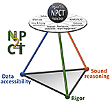
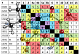
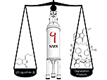
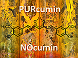
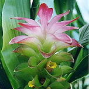
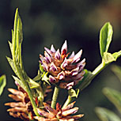
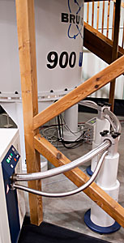
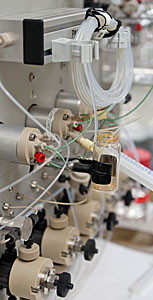
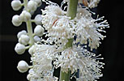
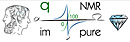

Quick Links
Reverse chronoogical list of peer-reviewed articles, pre-print articles, publicly shared Raw Data, and book chapters with Open Access incl. PubMed Central (PMC) and DOI information.
Publications by Year
2025, 2024, 2023, 2022, 2021, 2020, 2019, 2018, 2017, 2016, 2015, 2014, 2013, 2012, 2011, 2010, 2009, 2008, 2007, 2006, 2005, 2004-2000, 1999-1990
Guido F Pauli Bibliographies
- NCBI MyBibliography
- ORCID 0000-0003-1022-4326
Research Topics
- Residual Complexity
[ResCplx Publication Series]
- HiFSA in NMR
Harvard Dataverse
-
Pauli Group @ UIC
- CENAPT Center
The LOTUS Database
- LOTUS Natural Products
Publications
For a live up-to-date list of publications, please visit my ORCID page at https://orcid.org/0000-0003-1022-4326. or search PMC for our articles here. You can send a reprint request via email.
Public Raw Data Sharing
Original Electronic Research Data such as Raw NMR Data (FIDs) belonging to our papers are published on the GFP@UIC Harvard Dataverse via permanent DOIs as published and listed below. For raw data publishing instructions see the CENAPT Guidance Document.
List of Publications, Pre-Prints, and Associated Raw Data
2025 [»top of list|by year]
288
M Sayeda, S Jing, SN Chen, G Pauli, A Bedran-Russo
A Dual Action Approach of B-type Proanthocyanidins for Silencing Enzymatic Activity and Sealing Natural Caries-Affected Dentin-Resin Interfaces
Journal of Dentistry, in press (2025)
dx.doi.org/10.xyz
PubMedCentral: in progress
287
JG Neves, W Feijo Liberato, O Bim-Junior. S Jing, SN Chen, G Pauli, A Bedran-Russo
Optimization of Dental Adhesives Interfaces Using Tissue Biomodulation with DESIGNER Biopolymers
Dental Materials, in press (2025)
dx.doi.org/10.xyz
PubMedCentral: in progress
286
B Zhou, G Shetye, L Klein, N Wolf, H Lee, J McAlpine, G Harris, SN Chen, JW Suh, SH Cho, S Franzblau, C Abad-Zapatero, G Pauli
Structure-Based Analysis of Semisynthetic Anti-TB Rufomycin Analogues
Journal of Natural Products, in press (2025)
dx.doi.org/10.1021/acs.jnatprod.4c01266
PubMedCentral: in progress
[Open Access Article]
285
O Bim-Junior, S Jing, J McAlpine, SN Chen, G Pauli, A Bedran Russo
Regulatory potency of oligomeric proanthocyanidins (PACs) on extrafibrillar and intrafibrillar collagen mineralization
Applied Polymer Science 142,
e56694
(2025)
dx.doi.org/10.1002/app.56694
PubMedCentral: in progress
[Open Access Article]
284
L Botros, Y Liu, C Corbett, D Sorensen, C Szabo, A Bzhelyansky, M Niemitz, SP Korhonen, G Pauli, P Giraudeau, GJ Ray
Connecting the Practice of Modern Qualitative and Quantitative NMR Analysis with its Theoretical Foundation
Journal of Natural Products 88, 877-888 (2025)
dx.doi.org/10.1021/acs.jnatprod.3c00165
PubMedCentral: n/a
[Open Access Article]
283
Part 46 - Residual Complexity of Bioactive Natural Products
S Jing, JG Neves, W Liberato, D Ferreira, A Bedran-Russo, J McAlpine, SN Chen, G Pauli
Preparation, Modification, Quantitation, and Dentin Biomodification Activity of Selectively Enriched Proanthocyanidins
Journal of Natural Products 88, 152-161 (2025)
dx.doi.org/10.1021/acs.jnatprod.4c01213
Raw Data [Dataverse]: dx.doi.org/10.7910/DVN/FX8AGB
PubMedCentral: in process
2024 [»top of list|by year]
282
Part 45 - Residual Complexity of Bioactive Natural Products
J Graham, J Bisson, G Harris, ZJ Wang, D Waller, G Pauli
Natural Products with Potential for the Treatment of Pain: Global Evidence from the NAPRALERT Database
Journal of Natural Products 87, 2665-2675 (2024)
10.1021/acs.jnatprod.4c00439
Raw Data [Dataverse]: dx.doi.org/10.7910/DVN/BMPB6O
PubMedCentral: in process
281
D Zagal, J Graham, J Bisson, S Green, G Pauli
Natural Products with Potential for the Medicinal Plant Microbiomes: Factors Affecting Bacterial and Fungal Community Composition
Planta Medica 90, 1130-1142 (2024)
dx.doi.org/10.1055/a-2420-0270
PubMedCentral: in process
280
D Rebollar Ramos, SN Chen, D Lankin, GJ Ray, SP Korhonen, J Lehtivarjo, M Niemitz, G Pauli
Identification by HSQC and Quantification by qHNMR Innovate Pharmaceutical Amino Acid Analysis
Journal of Pharmaceutical and Biomedical Analysis 251, 116390 (2024)
dx.doi.org/10.1016/j.jpba.2024.116390
Raw Data [Dataverse]: dx.doi.org/10.7910/DVN/QAYBBH
PubMedCentral: n/a
[Open Access Article]
279
M Reis-Havlat, A Leme-Kraus, Y Alania, B Zhou, Y Tang, J McAlpine, SN Chen, G Pauli, A Bedran-Russo
Prodelphinidins enhance dentin matrix properties and promote adhesion to methacrylate resin
Dental Materials 40, 1164-1170 (2024)
dx.doi.org/10.1016/j.dental.2024.05.024
PubMedCentral: PMC11260231
278
Y Nishizaki, N Sugimoto, T Miura, K Asakura, T Suematsu, S-P Korhonen, J Lehtivarjo, M Niemitz, G Pauli
Quantum Mechanical Quantitative NMR Enables Digital Reference Standards at All Magnetic Fields and Enhances qNMR Sustainability
Analytical Chemistry 96, 9790-9798 (2024)
dx.doi.org/10.1021/acs.analchem.3c05267
PubMedCentral: n/a
[Open Access Article]
277
SX Jing, C McDermott, P Flanders, M Reis-Havlat, SN Chen, A Bedran-Russo, J McAlpine, E Ambrose, G Pauli
Chemical Transformation of B- to A-type Proanthocyanidins and 3D Structural Implications
Journal of Natural Products 87, 1416-1425 (2024)
dx.doi.org/10.1021/acs.jnatprod.4c00231
PubMedCentral: in progress
276
W Wang, J Lee, E Roh, G Shetye, J Cao, J McAlpine, G Pauli, S Franzblau, TH Nguyen Vu, N Tung Quach, E Oh, KH Park, C Park, Y Cho, H Jang, SJ Han, H Kim, S Cho, QT Phi, H Kang
Cavomycins A–C, Linear Oligomer Depsipeptides from an Annelid-Associated Streptomyces cavourensis
Journal of Natural Products 87, 976-983 (2024)
dx.doi.org/10.1021/acs.jnatprod.3c01275
PubMedCentral: in process
275
M Reis, Y Alania, S Jing, McAlpine, S-N Chen, G Pauli, A Bedran-Russo
Modulatory role of terminal monomeric flavan-3-ol units in the viscoelasticity of dentin
Journal of Biomedical Materials Research: Part B - Applied Biomaterials 112, e35333 (2024)
dx.doi.org/10.1002/jbm.b.35333
PubMedCentral: in process
2023 [»top of list|by year]
274
J McAlpine, D Ferreira, N Pauli, S Gafner, G Pauli
The Ethics of Publishing Biomedical and Natural Products Research
Journal of Natural Products 86, 2228–2237 (2023)
dx.doi.org/10.1021/acs.jnatprod.3c00165
PubMedCentral: n/a
[Editor's Choice | Open Access Article]
273
Part 44- Residual Complexity of Bioactive Natural Products
S Jing, D Ferreira, P Pandey, L Klein, A Chittiboyina, J McAlpine, D Lankin, Y Alania, M Reis-Havlat, A Bedran-Russo, SN Chen, G Pauli
Unprecedented Benzoquinone Motifs Reveal Post-Oligomerizational Modification of Proanthocyanidins
Journal of Organic Chemistry 88, 13490-13503 (2023)
dx.doi.org/10.1021/acs.joc.3c00950
PubMedCentral: n/a
272
Part 43- Residual Complexity of Bioactive Natural Products
R Hitzman, G Malca-Garcia, C Howell, H-Y Park, JB Friesen, H Dong, T Dunlap, J McAlpine, G Vollmer, M. Bosland, D Nikolić, D Lankin, S-N Chen, J Bolton, G Pauli, B Dietz
Minor Bioactive Constituents in Red Clover (Trifolium pratense L.)
Phytochemistry, 113789 (2023)
dx.doi.org/10.1016/j.phytochem.2023.113789
PubMedCentral: in progress
B-6 [Book Chapter]
Soejarto D, Revn Y, Elkington B, Pauli G, Henkin J, Sydara K, Kinghorn AD
Discovery of New Bioactive Compounds from Medicinal Plants of Laos
In: Medicinal Plants of Laos
Taylor & Francis, New York (2023)
Editor: Soejarto DB-5 [Book Chapter]
Soejarto D, Sydara K, Elkington B, Che CT, Pauli G, Douangdeuane B, Gyllenhaal C, Riley M
Summary and Future Prospects
In: Medicinal Plants of Laos
Taylor & Francis, New York (2023)
Editor: Soejarto D
271
A Hajirahimkhan, C Howell, SN Chen, S Clare, G Pauli, S Khan, J Bolton, B Dietz
Breast cancer prevention with liquiritigenin from licorice through the inhibition of aromatase and protein biosynthesis in high-risk women’s breast tissue
Scientific Reports 13, 8734 (2023)
dx.doi.org/10.1038/s41598-023-34762-z
PubMedCentral: PMC10229614
associated pre-print: bioRxiv | DOI:10.1101/2022.05.06.490985 | 8 May 2022
270
Part 42- Residual Complexity of Bioactive Natural Products
P Achanta, JB Friesen, G Harris, G Webster, S-N Chen, G Pauli
Development of Centrifugal Partition Chromatography for the Purification of Antibody-Drug Conjugates
Analytical Chemistry 95, 2783-2788 (2023)
dx.doi.org/10.1021/acs.analchem.2c0391
PubMedCentral: n/a
269
Y Tang, JB Friesen, D Lankin, J McAlpine, D Nikolic, S-N Chen, G Pauli
Geraniol-Derived Monoterpene Glucosides from Rhodiola rosea: Resolving Structures by QM-HifSA Methodology
Journal of Natural Products
86, 256–263
(2023)
dx.doi.org/10.1021/acs.jnatprod.2c00836
Raw Data [Dataverse]: dx.doi.org/10.7910/DVN/RLU2ZU
PubMedCentral: in process (NIHMSID 1919030)
268
J Liu, S. Banuvar, M. Viana, E. Barengolts, SN Chen, G Pauli, R van Breemen
Pharmacokinetic Interactions of a Licorice Dietary Supplement with Cytochrome P450 Enzymes in Female Participants
Drug Metabolism and Disposition 51, 199-204 (2023)
dx.doi.org/doi.org/10.1124/dmd.122.001050
PubMedCentral: PMC9900865
2022 [»top of list|by year]
267
T Azwell, C Ciotti, A Adams, J Golden, G Pauli
Hemp Analytical Testing Laboratories Evinces Regulatory and Quality Control Issues for the Industry
Journal of Applied Research on Medicinal and Aromatic Plants 31, 100434 (2022)
dx.doi.org/10.1016/j.jarmap.2022.100434 PubMedCentral: n/a
266
B Zhou, Y Alania, M Reis, S Jing, J McAlpine, A Bedran-Russo, SN Chen, D Ferreira, G Pauli
Seco B-type Oligomers from Pinus massoniana Expand Procyanidin Chemical Space and Exhibit Dental Bioactivity
Journal of Natural Products 85, 2753-2768 (2022)
dx.oid.org/10.1021/acs.jnatprod.2c00664
Raw Data [Dataverse]: dx.doi.org/10.7910/DVN/TNLEE3
PubMedCentral: PMC9789173
265
B Zhou, G Shetye, N Wolf, SN Chen, M Qader, GJ Ray, D Lankin, S Cho, J Cheng, JW Suh, S Franzblau, J McAlpine, G Pauli
New Rufomycins from Streptomyces atratus MJM3502 Expand Anti-Mycobacterium tuberculosis Structure−Activity Relationships
Organic Letters 24, 7265-7270 (2022)
dx.doi.org/10.1021/acs.orglett.2c02493
Raw Data [Dataverse]: dx.doi.org/10.7910/DVN/CL1CY7
PubMedCentral: PMC9588618
264
S Jing, M Reis, Y Alania, J McAlpine, SN Chen, A Bedran-Russo, G Pauli
B-type Proanthocyanidins with Dentin Biomodification Activity from Cocoa (Theobroma cacao)
Journal of Agricultural and Food Chemistry 70, 12456-12468 (2022)
dx.doi.org/10.1021/acs.jafc.2c04288
Raw Data [Dataverse]: dx.doi.org/10.7910/DVN/CAODOE
PubMedCentral: PMC9547875
263
A Rutz, M Sorokina, J Galgonek, D Mietchen, E Willighagen, A Gaudry, J Graham, R Stephan, R Page, J Vondrasek, C. Steinbeck, G Pauli, JL Wolfender, J Bisson, PM Allard
The LOTUS Initiative for Open Knowledge Management in Natural Products Research
eLife 11, e70780 (2022)
dx.doi.org/10.7554/eLife.70780
PubMedCentral: n/a
262
G Pauli, GJ Ray, A Bzhelyansky, B Jaki, C Corbett, C Szabo, C Steinbeck, D Sørensen, D Jeannerat, D Ferreira, D Lankin, J McAlpine, JN Dumez, J Bisson, K Krishnamurty, M Niemitz, M Nelson, P Giraudeau, SP Korhonen, S Kuhn, T Miura, L Botros
Consistent Terminology for Advancement of NMR Spectroscopy
Pharmacopoeial Forum 84(4), DocID: GUID-8F0C8A7B-6A9E-4F95-8FA2-E55A0E9C8236_10101_en-US (2022) [access requires free uspnf.org. account]
dx.doi.org/t.b.d.
PubMedCentral: n/a
associated pre-print: (in part)
chemRxiv | DOI:10.33774/chemrxiv-2021-l3dhr | 13 Jul 2021
G Pauli, GJ Ray, A Bzhelyansky, B Jaki, C Corbett, C Szabo, C Steinbeck, D Sørensen, D Jeannerat, D Ferreira, D Lankin, J McAlpine, JN Dumez, J Bisson, K Krishnamurty, M Niemitz, M Nelson, P Giraudeau, SP Korhonen, S Kuhn, T Miura, L Botros
Essential Terminology Connects NMR and qNMR Spectroscopy to Its Theoretical Foundation
261
Part 42 - Residual Complexity of Bioactive Natural Products
P Achanta, M Niemitz, JB Friesen, T Tadjimukhamedov, A Bzhelyansky, G Giancaspro, G Pauli
Pharmaceutical Analysis by NMR Can Accommodate Strict Impurity Thresholds: The Case of Choline
Journal of Pharmaceutical and Biomedical Analysis 214, 214709 (2022)
dx.doi.org/10.1016/j.jpba.2022.114709
Raw Data [Dataverse]: dx.doi.org/10.7910/DVN/QUTROQ
PubMedCentral: n/a
260
L Nguyen, D Yang, V Nicolaescu, T Best, H Gula, D Saxena, J Gabbard, SN Chen, T Ohtsuki, JB Friesen, N Drayman, A Mohamed, C Dann, D Silva, L Robinson-Mailman, A Valdespino, L Stock, E Suárez, K Jones, J Demarco, W Severson, JM Millis, B Dickinson, S Tay, S Oakes, G Pauli, K Palmer, The National COVID Cohort Collaborative Consortium, D Meltzer, G Randall, M Rich Rosner
Cannabidiol Inhibits SARS-CoV-2 Replication through Induction of the Host ER Stress and Innate Immune Responses
Science Advances 8, eabi6110 (2022) | 20 Jan 2022
DOI: 10.1126/sciadv.abi6110
PubMedCentral: Open Access
associated pre-print: bioRxiv | DOI: | 10 Mar 2021
259
D Kulakowski, R. Phansalkar, A. Leme-Kraus, J McAlpine, SN Chen, G Pauli, S Ravindran, A Bedran-Russo
Galloylated proanthocyanidins in dentin matrix exhibit biocompatibility and induce differentiation in dental stem cells
Journal of Bioactive and Compatible Polymers 37, 220-230 (2022)
dx.doi.org/10.1177/08839115221095154
PubMedCentral: PMCxyz (NIHMSID xyz)
258
Part 40- Residual Complexity of Bioactive Natural Products
T Ohtsuki, JB Friesen, SN Chen, J McAlpine, G Pauli
Selective Preparation and High Dynamic-Range Analysis of Cannabinoids in “CBD Oil” and Other Cannabis sativa Preparations
Journal of Natural Products 85, 634-643 (2022)
DOI: 10.1021/acs.jnatprod.1c00976
Raw Data [Dataverse]: dx.doi.org/10.7910/DVN/EYIWJQ
PubMedCentral: PMC8957589
257
S Jing Y Alania, M Reis, J McAlpine, SN Chen, A Bedran-Russo, G Pauli
Proanthocyanidin Tetramers and Pentamers from Cinnamomum verum Bark and Their Dentin Biomodification Bioactivities
Journal of Natural Products 85, 391-404 (2022)
dx.doi.org/10.1021/acs.jnatprod.1c00972
Raw Data [Dataverse]: dx.doi.org/10.7910/DVN/BXN3ZL
PubMedCentral: PMC8881394
256
Part 39 - Residual Complexity of Bioactive Natural Products
G Malca-Garcia, Y Liu, D Nikolic, JB Friesen, D Lankin, J McAlpine, SN Chen, G Pauli
Investigation of Red Clover (Trifolium pratense) Isoflavonoid Residual Complexity by Off-line CCS-qHNMR
Fitoterapia 152, 105016 (2022)
dx.doi.org/10.1016/j.fitote.2021.105016
Raw Data [Dataverse]: DOI:/10.7910/DVN/WJYWVP
PubMedCentral: PMC8742771
255
Y Alania, B Zhou, M Reis, A Leme-Kraus, J McAlpine, SN Chen, G Pauli, A Bedran-Russo
Paradoxical effects of galloyl motifs in the interactions of proanthocyanidins with collagen-rich dentin
Journal of Biomedical Materials Research Part A 110, 196-203 (2022)
dx.doi.org/10.1002/jbm.a.37276
PubMedCentral: PMC8900943
2021 [»top of list|by year]
254
D Seigler, J B Friesen, J Bisson, J Graham, A Bedran-Russo, J McAlpine, G Pauli
Do Certain Flavonoid IMPS Have a Vital Function?
Frontiers in Nutrition 8, 762753 (2021)
dx.doi.org/10.3389/fnut.2021.762753
PubMedCentral: PMC8672243
253
M Reis, B Zhou, Y Alania, A Leme-Kraus, S Jing, J McAlpine, SN Chen, G Pauli, A Bedran-Russo
Unveiling Structure-Activity-Relationships of Proanthocyanidins with Dentin Collagen
Dental Materials 37, 1633-1644 (2021)
dx.doi.org/1016/j.dental.2021.08.013
PubMedCentral: PMC8791559
252
B Vandanmagsar, Y Yu, C Simmler, T Dang, P Kuhn, A Poulev, D Ribnicky, G Pauli, ZE Floyd
Bioactive compounds from Artemisia dracunculus L. activate AMPK signaling in skeletal muscle
Biomedicine and Pharmacotherapy 134, 112188 (2021)
dx.doi.org/10.1016/j.biopha.2021.112188 PubMedCentral: PMC8516709
251
Part 41 - Residual Complexity of Bioactive Natural Products
B Zhou, P Achanta, G Shetye, SN Chen, H Lee, YY Jin, J Cheng, MJ Lee, JW Suh, SH Cho, S Franzblau, G Pauli, J McAlpine
Rufomycins or Ilamycins: Naming Clarifications and Definitive Structural Assignments
Journal of Natural Products 84, 2644-2663 (2021)
dx.doi.org/10.1021/acs.jnatprod.1c00198
Raw Data [Dataverse]: dx.doi.org/10.7910/DVN/xyz
PubMedCentral: PMC8865217
[Rufomycin Naming Synopsis - a regularly updated webpage with all rufomycins]
[Editor's Choice | Open Access Article]
250
Y Tang, JB Friesen, D Nikolic, D Lankin, J McAlpine, SN Chen, G Pauli
The Tandem of Countercurrent Separation and qHNMR Enables Gravimetric Analysis: Absolute Quantitation of the Rhodiola rosea Metabolome
Analytical Chemistry 93, 11701-11709 (2021)
dx.doi.org/10.1021/acs.analchem.1c01554
Raw Data [Dataverse]: dx.doi.org/10.7910/DVN/UVAKGK
PubMedCentral: PMCxyz (NIHMSID 1777711
249
G Giancaspro, K Adams, S Bhavaraju, C Corbett, B Diehl, JC Freudenberger, K Fritsch, K Krishnamurthy, P Laatikainen, G Martos, T Miura, JW Nam, M Niemitz, Y Nishizaki, N Sugimoto, M Obkircher, R Phansalkar, GJ Ray, T Saito, D Sorensen, A Urbas, J Napolitano, F Tadjimukhamedov, A Bzhelyansky, Y Liu, G Pauli
The qNMR Summit 5.0: Proceedings & Status of qNMR Technology
Analytical Chemistry 93, 12162-12169 (2021)
dx.doi.org/10.1021/acs.analchem.1c02056
Raw Data [Dataverse]: dx.doi.org/10.7910/DVN/xyz
PubMedCentral: n/a
[Open Access Article]
pre-print #8
G Pauli, GJ Ray, A Bzhelyansky, B Jaki, C Corbett, C Szabo, C Steinbeck, D Sørensen, D Jeannerat, D Ferreira, D Lankin, J McAlpine, JN Dumez, J Bisson, K Krishnamurty, M Niemitz, M Nelson, P Giraudeau, SP Korhonen, S Kuhn, T Miura,L Botros
Essential Terminology Connects NMR and qNMR Spectroscopy to Its Theoretical Foundation
chemRxiv | DOI:10.33774/chemrxiv-2021-l3dhr | 13 Jul 2021
248
CR Park, S Paik, YJ Kim, JK Kim, SM Jeon, SH Lee, J Cheng, JW Suh, Jin Cao, G Shetye, SN Chen, J McAlpine, G Pauli, S Franzblau, S Cho, EK Jo
Rufomycin Exhibits Dual Effects against Mycobacterium abscessus Infection by Inducing Host Defense and Antimicrobial Activities
Frontiers in Microbiology 12, 695024 (2021)
dx.doi.org/10.3389/fmicb.2021.695024
PubMedCentral: PMC8383285
247
D Ribnicky, SB Kim, A Poulev, Y Wang, A Boudreau, I Raskin, J Bisson, GJ Ray, SN Chen, A Richard, J Stephens, G Pauli
Prenylated Coumaric Acids from Artemisia scoparia Beneficially Modulate Adipogenesis
Journal of Natural Products 84, 1078-1086 (2021)
dx.doi.org/10.1021/acs.jnatprod.0c01149
PubMedCentral: PMC8132292
246
Y Tang, JB Friesen, D Nikolic, D Lankin, J McAlpine, SN Chen, G Pauli
Silica gel-Mediated Oxidation of Prenyl Motifs Generates Natural Product-Like Artifacts
Planta Medica 87, 998-1007 (2021)
dx.doi.org/10.1055/a-1472-6164
Raw Data [Dataverse]: DOI:10.7910/DVN/10LXFI
PubMedCentral: PMC8867998
245
B Aydin, A-A Compton, R Phansalkar, SN Chen, G Pauli, A Bedran-Russo
Oligomeric proanthocyanidins inhibit endogenous
enzymatic activity of deciduous carious dentin
Pediatric Dental Journal 31, 73-79 (2021)
dx.doi.org/10.1016/j.pdj.2020.12.003
PubMedCentral: PMCxyz
244
P Achanta, SN Chen, G Pauli
Plain 1H NMR Analysis Streamlines the Quality Control of Antiviral Favipiravir and Congeneric WHO Essential Medicines
Magnetic Resonance in Chemistry 59, 746-751 (2021)
dx.doi.org/10.1002/mrc.5154
Raw Data [Dataverse]: dx.doi.org/10.7910/DVN/BANXW8
PubMedCentral: n/a
pre-print #7
L Nguyen, D Yang, V Nicolaescu, T Best, T Ohtsuki, SN Chen, JB Friesen, N Drayman, A Mohamed, C Dann, D Silva, H Gula, K Jones, JM Millis, B Dickinson, S Tay, S Oakes, G Pauli, D Meltzer, G Randall, M Rich Rosner
Cannabidiol Inhibits SARS-CoV-2 Replication and Promotes the Host Innate Immune Response
bioRxiv | DOI: | 10 Mar 2021
243
Part 38 - Residual Complexity of Bioactive Natural Products
S Kim, J Bisson, J Friesen, L Bucchini, S Gafner, D Lankin, SN Chen, G Pauli, J McAlpine
The Untargeted Capability of NMR Recognizes Nefarious Adulteration in Natural Products
Journal of Natural Products, 84, 846-856 (2021)
dx.doi.org/10.1021/acs.jnatprod.0c01196
Raw Data [Dataverse]: dx.doi.org/10.7910/DVN/LOGPMI
PubMedCentral: PMC8049841
242
G Malca-Garcia, Y Liu, H Dong, D Nikolic, JB Friesen, D Lankin, J McAlpine, SN Chen, B Dietz, G Pauli
Auto-hydrolysis of Red Clover as “Green” Approach to (Iso)Flavonoid Enriched Products
Fitoterapia 152, 104878 (2021)
dx.doi.org/10.1016/j.fitote.2021.104878
Raw Data [Dataverse]: DOI:/10.7910/DVN/HFI7HE
PubMedCentral: PMC9109069
pre-print #6
A Rutz, M Sorokina, J Galgonek, D Mietchen, E Willighagen, J Graham, R Stephan, R Page, J Vondrasek, C Steinbeck, G Pauli, JL Wolfender, J Bisson, PM Allard
Open Natural Products Research: Curation and Dissemination of Biological Occurrences of Chemical Structures through Wikidata
The LOTUS Project - An Open and FAIR Natural Products Electronic Resource
bioRxiv | DOI: | 2021433265 | 1 Mar 2021
241
S Bhavaraju, D Taylor, M Niemitz, D Lankin, A Bzhelyansky, G Giancaspro, Y Liu,
G Pauli
NMR-based Quantum Mechanical Analysis Builds Trust and Orthogonality in Structural Analysis: the Case of a Bisdesmosidic Triglycoside as Withania somnifera Aerial Parts Marker
Journal of Natural Products 84, 836-845 (2021)
dx.doi.org/10.1021/acs.jnatprod.0c01131
Raw Data [Dataverse]: DOI:10.7910/DVN/SMSUCM
PubMedCentral: PMC8049857
240
Y Nishizaki, D Lankin, SN Chen, G Pauli
Accurate and Precise External Calibration Enhances the Versatility of Quantitative NMR (qNMR)
Analytical Chemistry 93, 2733-2741(2021)
dx.doi.org/10.1021/acs.analchem.0c02967
Raw Data [Dataverse]: DOI:10.7910/DVN/QFY6L9
PubMedCentral:
PMC8046598
239
S Creed, A. Gutridge, M Argade, M Hennessy, JB Friesen,
G Pauli, R van Rijn, A Riley
Isolation and Pharmacological Characterization of Six Opioidergic Picralima nitida Alkaloids
Journal of Natural Products 84, 71-80 (2021)
dx.doi.org/10.1021/acs.jnatprod.0c01036
PubMedCentral: PMC7932029
238
B Jaki, A Bzhelyansky, G Pauli
Quantitative NMR (qNMR) for Pharmaceutical Analysis:
the Pioneering Work of George Hanna at the U.S. FDA
Magnetic Resonance in Chemistry 59, 7-15 (2021)
dx.doi.org/10.1002/mrc.5099
PubMedCentral: n/a
237
P Achanta, B Jaki, J McAlpine, JB Friesen, M Niemitz,
SN Chen, G Pauli
Quantum Mechanical NMR Full Spin Analysis in Pharmaceutical Identity Testing and Quality Control
Journal of Pharmaceutical and Biomedical Analysis, 195, 113601 (2021)
dx.doi.org/10.1016/j.jpba.2020.113601
PubMedCentral: PMC7750297
2020 [»top of list|by year]
236
Y Alania, M Reis, JW Nam, R Phansalkar, J McAlpine,
SN Chen, G Pauli, A Bedran-Russo
A dynamic mechanical method to assess bulk viscoelastic behavior of the dentin extracellular matrix
Dental Materials, 36, 1536-1543 (2020)
dx.doi.org/10.1016/j.dental.2020.09.014
PubMedCentral: PMC7959212
235
Part 37 - Residual Complexity of Bioactive Natural Products
JW Nam, R Phansalkar, D Lankin, J McAlpine, A Leme-Kraus,
A Bedran-Russo, SN Chen, G Pauli
Targeting Trimeric and Tetrameric Proanthocyanidins of Cinnamomum verum Bark as Bioactives for Dental Therapies
Journal of Natural Products 83, 3287-3297 (2020)
dx.doi.org/10.1021/acs.jnatprod.0c00570
Raw Data [Dataverse]: DOI:10.7910/DVN/F5PJY3
PubMedCentral: PMC8041212
234
S Jing, W Zeller, D Ferreira, B Zhou, JW Nam, A Bedran-Russo,
SN Chen, G Pauli
PACBAR for Comprehensive Capture and Delineation of Proanthocyanidin Structures
Journal of Agricultural and Food Chemistry 68, 13541-13549 (2020)
dx.doi.org/10.1021/acs.jafc.0c05392
PubMedCentral:
PMC8010997
233
L Chen, J Choi, S Leonard, S Banuvar, E Barengolts, M Viana, SN Chen, G Pauli, J Bolton, R van Breemen
No Clinically Relevant Pharmacokinetic Interactions of a Red Clover Dietary Supplement with Cytochrome P450 Enzymes in Women
Journal of Agricultural and Food Chemistry 69, 13929-13939 (2020)
dx.doi.org/10.1021/acs.jafc.0c05856
PubMedCentral: PMC8071351
232
R Hitzman,
T Dunlap, C Howell, SN Chen, G Vollmer, G Pauli, J Bolton, B Dietz
6-Prenylnaringenin from Hops Disrupts ERα-Mediated Downregulation of CYP1A1 to Facilitate Estrogen Detoxification
Chemical Research in Toxicology 33, 2793-2803 (2020)
dx.doi.org/10.1021/acs.chemrestox.0c0019
PubMedCentral: PMC834911
231
O Mbachu, C Howell, C Simmler, G Malca, K Skowron, H Dong, S Ellis, R Hitzman, A Hajirahimkhan, SN Chen, D Nikolic, T Moore, G Vollmer G, G Pauli, J Bolton, B Dietz
SAR Study on Estrogen Receptor α/β Activity of (Iso)Flavonoids: Importance of Prenylation, C-ring (Un)Saturation, and Hydroxyl Substituents
Journal of Agricultural and Food Chemistry 68, 10651-10663 (2020)
dx.doi.org/10.1021/acs.jafc.0c03526
Raw Data [Dataverse]: DOI:10.7910/DVN/HNMYE5
PubMedCentral: PMC8294944
230
K Nelson, J Bisson, G. Singh, J Graham, SN Chen, JB Friesen,
J Dahlin, M Niemitz, M Walters, G Pauli
The Essential Medicinal Chemistry of Cannabidiol (CBD)
Journal of Medicinal Chemistry 63, 12137-12155 (2020)
dx.doi.org/10.1021/acs.jmedchem.0c00724
PubMedCentral: PMC7666069
229
A Imai, D Lankin, T Gödecke, SN Chen, G Pauli
Differentiation of Actaea Species by NMR Metabolomics Analysis
Fitoterapia 146, 105686 (2020)
dx.doi.org/10.1016/j.fitote.2020.104686
Raw Data [Dataverse]: DOI:10.7910/DVN/QTYIIM
PubMedCentral: PMC7572815
228 and pre-print #5
B Zhou, Y Alania, M Reis, R Phansalkar, JW Nam, J McAlpine,
SN Chen, A Bedran-Russo, G Pauli
Rare A-Type, Spiro-Type, and Highly Oligomeric Proanthocyanidins from Pinus massoniana
Organic Letters 22, 5304-5308 (2020)
dx.doi.org/10.1021/acs.orglett.0c01439
chemRxiv | DOI: 10.26434/chemrxiv.12055389 | 31 Mar 2020
Raw Data [Dataverse]: DOI:10.7910/DVN/CI2ODS
PubMedCentral: PMC7521950
227 and pre-print #4
B Zhou, Y Alania, M Reis, R Phansalkar, JW Nam, J McAlpine,
SN Chen, A Bedran-Russo, G Pauli
Tri- and Tetrameric Proanthocyanidins with Dentin Bioactivities from Pinus massoniana
Journal of Organic Chemistry 85, 8462–8479 (2020)
dx.doi.org/10.1021/acs.joc.0c00783
PubMedCentral: PMC7384766
Raw Data [Dataverse]: DOI:10.7910/DVN/HDSCHJ
chemRxiv | DOI: 10.26434/chemrxiv.12168168.v1 | 21 Apr 2020
226
SB Kim, J Bisson, JB Friesen, G Pauli, C Simmler
Selective Chlorophyll Removal Method to "Degreen" Botanical Extracts
Journal of Natural Products 83, 1846-1858 (2020)
dx.doi.org/10.1021/acs.jnatprod.0c00005
Raw Data [Dataverse]: DOI:10.7910/DVN/CB3H56
PubMedCentral: PMC7398693
225
R van Breemen, L Chen, A Tonsing-Carter, S Banuvar, E Barengolts, M Viana, SN Chen, G Pauli, J Bolton
Pharmacokinetic Interactions of a Hop Dietary Supplement with Drug Metabolism in Perimenopausal and Postmenopausal Women
Journal of Agricultural and Food Chemistry 68, 5212-5220 (2020)
dx.doi.org/10.1021/acs.jafc.0c01077
PubMedCentral: PMC8071352
224 and pre-print #3
Y Tang, D Lankin, J McAlpine, D Nikolic, M Niemitz, D Seigler, J Graham, SN Chen, G Pauli
Quantum Mechanics-Based Structure Analysis of Cyclic Monoterpene Glycosides from Rhodiola rosea
Journal of Natural Products 83, 1950-1959 (2020)
dx.doi.org/10.1021/acs.jnatprod.0c00212
Raw Data [Dataverse]: DOI: 10.7910/DVN/Y0DH49
PubMedCentral: PMC7384765
chemRxiv | DOI: 10.26434/chemrxiv.11911065.v1 | 27 Feb 2020
pre-print #2
D Seigler, JB Friesen, J Bisson, J Graham, A Bedran-Russo, J McAlpine, G Pauli
Vitamin P – Do Certain Polyphenolic IMPS Have a Vital Function?
nutriXiv/OSF | DOI: 10.31232/osf.io/9ac8 | 12 Mar 2020
223
L Tosi Trevelin, Y Alania, M Mathew, R Phansalkar, SN Chen,
G Pauli, A Bedran-Russo
Effect of dentin biomodification delivered by experimental acidic and neutral primers on resin adhesion
Journal of Dentistry 99, 103354 (2020)
dx.doi.org/10.1016/j.jdent.2020.103354
PubMedCentral: PMC8017565
222
N Wolf, H Lee, D Zagal, JW Nam, DC Oh, H Lee, JW Suh, G Pauli, S Cho, C Abad-Zapatero
Structure of ClpC1-NTD in complex with the anti-TB natural product
ecumicin reveals unique binding interactions
Acta Crystallographica D 76, 458-471 (2020)
dx.doi.org/10.1107/S2059798320004027
Raw Data [Dataverse]:
PubMedCentral: PMC7193532
221
B Zhou, G Shetye, Y Yu, B Santarsiero, L Klein, C Abad-Zapatero, N Wolf, J Cheng, Y Jin, H Lee, JW Suh, H Lee, J Bisson, J McAlpine, SN Chen, SH Cho, S Franzblau, G Pauli
Antimycobacterial Rufomycin Analogues from Streptomyces atratus Strain MJM3502
Journal of Natural Products 83, 657-667 (2020)
dx.doi.org/10.1021/acs.jnatprod.9b01095
Raw Data [Dataverse]: 10.7910/DVN/HIZJRU
PubMedCentral: PMC7384767
220
Part 36 - Residual Complexity of Bioactive Natural Products
Y Yu, G Pauli, L Huang, LS Gan, R van Breemen, D Li, J McAlpine, D Lankin, SN Chen
Classification of Flavonoid Metabolomes via Data Mining and Quantification of Hydroxyl NMR Signals
Analytical Chemistry 92, 4954-4962 (2020)
dx.doi.org/10.1021/acs.analchem.9b05084
Raw Data [Dataverse]: 10.7910/DVN/NFQNJQ
PubMedCentral: PMC7442116
219
A Imai, D Lankin, T Gödecke, SN Chen, G Pauli
NMR based quantitation of cycloartane triterpenes in black cohosh extracts
Fitoterapia 141, 104467 (2020)
dx.doi.org/10.1016/j.fitote.2019.104467
Raw Data [Dataverse]: 10.7910/DVN/TL11QU
PubMedCentral: PMC7066989
218 and pre-print #1 [Open Access]
B Sorkin, A Kuszak, N Fukagawa, F Hoffman, M Jafari, B Barrett, P Brown, F Bushman, S Chilton, C Coffey, M Ferruzzi, C Hopp, M Kiely, D Lakens, J MacMillan, D Meltzer, M Pahor, J Paul, K Pritchett-Corning, S Quinney, B Rehermann, K Setchell, N Sipes, J Stephens, DL Taylor, H Tiriac, M Walters, D Xi, G Zappalá, G Pauli
Improving Natural Product Research Translation: from Source to Clinical Trial
FASEB Journal 34, 41-64 (2020)
dx.doi.org/10.1096/fj.201902143R
PubMedCentral: PMC7470648
nutriXiv/OSF | DOI: 10.31232/osf.io/8vfnc | 25 Aug 2019
217
A Leme-Kraus, R Phansalkar, M dos Reis, B Aydin, A Souza, Y Alania, J McAlpine, SN Chen, G Pauli, A Bedran-Russo
Dimeric Proanthocyanidins on the Stability of Dentin and Adhesive Biointerfaces
Journal of Dental Research 99, 175-181 (2020)
dx.doi.org/10.1177/0022034519892959
PubMedCentral: PMC7431887
216
Part 35 - Residual Complexity of Bioactive Natural Products
M Choules, J Bisson, C Simmler, J McAlpine, G Giancaspro, A Bzhelyansky, M Niemitz, G Pauli
NMR Reveals an Undeclared Constituent in Custom Synthetic Peptides
Journal of Pharmaceutical and Biomedical Analysis 178, 112915 (2020)
dx.doi.org/10.1016/j.jpba.2019.112915
Raw Data [Dataverse]: dx.doi.org/10.7910/DVN/NNGNQC
PubMedCentral: PMC6913887
215
S AbouZid, H Ahmed, AE Abd El Mageed, A Moawad, A Owis,
SN Chen, A Nachtergael, J McAlpine, J Friesen, G Pauli
Linear regression analysis of silychristin A, silybin A and silybin B contents in Silybum marianum
Natural Product Research 34, 305-310 (2020)
dx.doi.org/10.1080/14786419.2018.1527838
PubMedCentral: n/a
2019 [»top of list|by year]
214
Y Yu, C Simmler, P Kuhn, A Poulev, I Raskin, W. Cefalu, D Ribnicky, E Floyd, G Pauli
The DESIGNER Approach Helps Decipher the Hypoglycemic Bioactive Principles of Artemisia dracunculus (Russian Tarragon)
Journal of Natural Products 82, 2400-2408 (2019)
dx.doi.org/10.1021/acs.jnatprod.9b00548
Raw Data [Dataverse]: dx.doi.org/10.7910/DVN/QZH2DP
PubMedCentral: PMC7076913
213
Part 34 - Residual Complexity of Bioactive Natural Products
K Duric, Y Liu, SN Chen, D Lankin, D Nikolic, J McAlpine, JB Friesen, G Pauli
Studying Mass Balance and the Stability of (Z)-Ligustilide from Angelica sinensis Helps to Bridge a Botanical Instability-Bioactivity Chasm
Journal of Natural Products 82, 2400-2408 (2019)
dx.doi.org/10.1021/acs.jnatprod.8b00962
Raw Data [Dataverse]: dx.doi.org/10.7910/DVN/S3POLB
PubMedCentral: PMC6930006
212
J Fang, D Nikolic, D Lankin, C Simmler, SN Chen, R Ramos Alvarenga, Y Liu, G Pauli, R van Breemen
Formation of (2R)- and (2S)-8 prenylnaringenin glucuronides by human UDP glucuronosyltransferases
Journal of Agricultural and Food Chemistry 67, 11650-11656 (2019)
dx.doi.org/10.1021/acs.jafc.9b04657
PubMedCentral: PMC6942495
211
X-H Gao, Y-Y Fan, Q-F Liu; S-H Cho, G Pauli, SN Chen, J-M Yue
Suadimins A–C, Unprecedented Dimeric Quinoline Alkaloids with Antimycobacterial Activity from Melodinus suaveolens
Organic Letters 21, 7065-7068 (2019)
dx.doi.org/10.1021/acs.orglett.9b02630
PubMedCentral: n/a
210
R Phansalkar, J-W Nam, A Leme-Kraus, L-S Gan, B Zhou,
J McAlpine, SN Chen, A Bedran-Russo, G Pauli
Proanthocyanidin Dimers and Trimers from Vitis vinifera Provide Diverse Structural Motifs for the Evaluation of Dentin Biomodification
Journal of Natural Products 82, 2387-2399 (2019)
dx.doi.org/10.1021/acs.jnatprod.8b00953
Raw Data [Dataverse]: dx.doi.org/10.7910/DVN/EF1FWQ
PubMedCentral: PMC6899061
209
E Grzelak, M Choules, W Gao, G Cai, B Wan, Y Wang, J McAlpine, J Cheng, Y Jin, H. Lee, JW Soo, G Pauli, S Franzblau, B Jaki, S. Cho
Strategies in Anti-Mycobacterium tuberculosis Drug Discovery based on Phenotypic Screening
Journal of Antibiotics 72, 719-728 (2019)
dx.doi.org/10.1038/s41429-019-0205-9
PubMedCentral: PMC6760628
[Open Access Article]208
G Malca, JB Friesen, Y Liu, D Nikolic, D Lankin, J McAlpine,
SN Chen, G Pauli
Preparation of DESIGNER extracts of red clover (Trifolium pratense L.) by centrifugal partition chromatography
Journal of Chromatography A 1606, 360277 (2019)
dx.doi.org/10.1016/j.chroma.2019.05.057
Raw Data [Dataverse]: dx.doi.org/10.7910/DVN/13NPRW
PubMedCentral: PMC6864275
207
N Wolf, H Lee, M Choules, G Pauli, L Klein, V Petukhova, M Tufano, R Phansalkar, J Anderson, W Gao, J Ren, B Santarsiero, H Lee, J Cheng, YY Jin, NA Ho, NM Duc, JW Suh, C Abad-Zapatero, SH Cho
High-resolution structure of ClpC1-rufomycin and ligand binding studies provide a framework to design and optimize anti-TB leads
ACS Infectious Diseases 5, 829-840 (2019)
dx.doi.org/10.1021/acsinfecdis.8b00276
PubMedCentral: PMC6657506
[Open Access Article]
206
Part 33 - Residual Complexity of Bioactive Natural Products
G Malca, D Zagal, J Graham, D Nikolic, JB Friesen, D Lankin,
SN Chen, G Pauli
Dynamics of the isoflavone metabolome of traditional preparations of Trifolium pratense L.
Journal of Ethnopharmacology 111865 (2019)
dx.doi.org/10.1016/j.jep.2019.111865
Raw Data [Dataverse]: dx.doi.org/10.7910/DVN/I7UPMA
PubMedCentral: PMC6549234
205
Y Chen, X Yan, F Lu, X Jian, JB Friesen, G Pauli, SN Chen, D Li
Preparation of flavone di-C-glycoside isomers from Jian-Gu Injection (Premna fulva Craib.) using recycling counter-current chromatography
Journal of Chromatography A
1599, 180-186
(2019)
dx.doi.org/10.1016/j.chroma.2019.03.030
PubMedCentral: n/a
204
Part 32 - Residual Complexity of Bioactive Natural Products
JB Friesen, Y Liu, SN Chen, J McAlpine, G Pauli
Selective Depletion and Enrichment of Constituents in
“Curcumin” and Other Curcuma longa Preparations
Journal of Natural Products 82, 621-630 (2019)
dx.doi.org/10.1021/acs.jnatprod.9b000020
Raw Data [Dataverse]: dx.doi.org/10.7910/DVN/ERQ7AV
PubMedCentral: PMC in process [NIHMSID 1039986]
[Open Access Article]
203
M Choules, J Bisson, W Gao, D Lankin, J McAlpine, M Niemitz,
B Jaki, S Franzblau, G Pauli
Quality Control of Therapeutic Peptides by 1H NMR HiFSA Sequencing
Journal of Organic Chemistry 84, 3055–3073 (2019)
dx.doi.org/10.1021/acs.joc.8b02704
Raw Data [Dataverse]: dx.doi.org/10.7910/DVN/WGP8CS
PubMedCentral: PMC6452441
[Open Access Article]
202
J Bolton, T Dunlap, A Hajirahimkhan, O Mbachu, SN Chen,
L Chadwick, D Nikolic, R van Breemen, G Pauli, B Dietz
The Multiple Biological Targets of Hops and Bioactive Compounds
Chemical Research in Toxicology 32, 222-233 (2019)
doi.org/10.1021/acs.chemrestox.8b00345
PubMedCentral: PMC6643004
201
M Choules, N Wolf, H Lee, J Anderson, E Grzelak, Y Wang, R Ma,
W Gao, J McAlpine, YY Jin, J Cheng,
H Lee, JW Suh, N Du, S Paik,
J Cho, EK Jo, C Chang, J Lee, B Jaki, G Pauli, S Franzblau, S Cho
Rufomycin Targets ClpC1 Proteolysis in Mycobacterium tuberculosis and M. abscessus
Antimicrobial Agents in Chemotherapy 63, e02204-18 (2019)
doi.org/10.1128/AAC.02204-18
PubMedCentral: PMC6395927
[Open Access Article]
200
J McAlpine, SN Chen, A Kutateladze, J MacMillan, G Appendino, A Barison, M Beniddir, M Biavatti, S Bluml, A Boufridi, M Butler, R Capon, Y Choi, D Coppage, P Crews, M Crimmins, M Csete, P Dewapriya, J Egan, M Garson, G Genta-Jouve, W Gerwick, H Gross, M Harper, P Hermanto, J Hook, L Hunter, D Jeannerat, NY Ji, T Johnson, D Kingston, H Koshino, HW Lee, G Lewin, J Li, R Linington, M Liu, K McPhail, T Molinski, B Moore, JW Nam, R Neupane, M Niemitz, JM Nuzillard, N Oberlies, F Ocampos, G Pan, R Quinn, D Reddy, JH Renault, J Rivera-Chávez, W Robien, C Saunders, T Schmidt, C Seger, B Shen, C Steinbeck, H Stuppner, S Sturm, O Taglialatela-Scafati, D Tantillo, R Verpoorte, B Wang, C Williams, P Williams, J Wist, JM Yue, C Zhang, Z Xu, C Simmler, D Lankin,
J Bisson, G Pauli
The Value of Universally Available Raw NMR Data for Transparency, Reproducibility, and Integrity in Natural Product Research
Natural Product Reports 36, 35-107 (2019)
[Open Access Article]
dx.doi.org/10.1039/c7np00064b
Raw Data [Dataverse]: dx.doi.org/10.7910/DVN/WB0DHJ
PubMedCentral: PMC6350634
199
B Aydin, A Leme-Kraus, C Vidal, T Aguiar, R Phansalkar, JW Nam, J McAlpine, SN Chen, G Pauli, A Bedran-Russo
Evidence to the role of interflavan linkages and galloylation of proanthocyanidins at sustaining long-term dentin biomodification
Dental Materials 35, 328-334 (2019)
doi.org/10.1016/j.dental.2018.11.029
PubMedCentral: PMC6346742
2018 [»top of list|by year]
198
S Wang, T Dunlap, L Huang, Y Liu, C Simmler, D Lantvit, J Crosby, C Howell, H Dong, SN Chen, G Pauli, R van Breemen, B Dietz,
J Bolton
Evidence for chemopreventive and resilience activity of licorice: Glycyrrhiza glabra and G. inflata extracts modulate estrogen metabolism in ACI rats
Cancer Prevention Research 11, 819-829 (2018)
dx.doi.org/10.1158/1940-6207.CAPR-18-0178
PubMedCentral: PMC6435032
197
Part 31 - Residual Complexity of Bioactive Natural Products
M Choules, L Klein, D Lankin, J McAlpine, SH Cho, J Cheng, H Lee, JW Suh, B Jaki, S Franzblau, G Pauli
Residual Complexity Does Impact Organic Chemistry and Drug Discovery: The Case of Rufomyazine and Rufomycin
Journal of Organic Chemistry 83, 6664-6672 (2018)
dx.doi.org/10.1021/acs.joc.8b00988
Raw Data [Dataverse]: dx.doi.org/
PubMedCentral: PMC6006449
“Research Highlight” in Nature Reviews Drug Discovery 17, 470 (2018, dx.doi.org/10.1038/nrd.2018.104)
196
A Hajirahimkhan, O Mbachu, C Simmler, S Ellis, H Dong, D Nikolic,
D Lankin, R van Breemen, SN Chen, G Pauli, B Dietz, J Bolton
Estrogen Receptor (ER) Subtype Selectivity Identifies 8-Prenylapigenin as an ER β Agonist from Glycyrrhiza inflata and Highlights the Importance of Chemical and Biological Authentication
Journal of Natural Products 81, 108-115 (2018)
dx.doi.org/10.1021/acs.jnatprod.7b01070
PubMedCentral: PMC5928484
195
Q Fan, Y Liu, D Kulakowski, SN Chen, JB Friesen, G Pauli, Q Song
Countercurrent separation assisted identification of two mammalian steroid hormones in Vitex negundo
Journal of Chromatography A, 1553, 108-115 (2018)
dx.doi.org/10.1016/j.chroma.2018.04.033
PubMedCentral: PMC6365631
194
Y Liu, Y Zhang, SN Chen, JB Friesen, D Nikolic, M Choules,
J McAlpine, D Lankin, R Gemeinhart, G Pauli
The Influence of Natural Deep Eutectic Solvents on Bioactive Natural Products: Studying Interactions between a Hydrogel Model and Schisandra chinensis Metabolites
Fitoterapia 129, 212-219 (2018)
dx.doi.org/10.1016/j.fitote.2018.02.024
Raw Data [Dataverse]: dx.doi.org/
PubMedCentral: PMC5984185
193
C Simmler, J Graham, SN Chen, G Pauli
Integrated analytical assets aid botanical authenticity and adulteration management
Fitoterapia 129, 401-414 (2018)
dx.doi.org/10.1016/j.fitote.2017.11.017
PubMedCentral: PMC5963993
192
Y Liu, JB Friesen, J McAlpine, D Lankin, SN Chen, G Pauli
Natural Deep Eutectic Solvents: Properties, Applications, and Perspectives
Journal of Natural Products 81, 679-690 (2018)
dx.doi.org/10.1021/acs.jnatprod.7b00945
PubMedCentral: PMC5913660
191
PM Allard, J Bisson, A Azzollini, G Pauli, G Cordell, JL Wolfender
Pharmacognosy in the Digital Era: Shifting to Contextualized Metabolomics
Current Opinion in Biotechnology 54, 57-64 (2018)
dx.doi.org/10.1016/j.copbio.2018.02.010
PubMedCentral: PMC6110999
190
J White, B O’Keefe, J Sharma, G Javed, V Nukala, A Ganguly,
I Khan, N Kumar, H Mukhtar, G Pauli, L Walker, S Sivaram,
P Rajaraman, T Trimble
India-U.S. Dialogue on Traditional Medicine - Towards Collaborative Research and Generation of an Evidence Base
Journal of Global Oncology 4, 1-10 (2018)
dx.doi.org/10.1200/JGO.17.00099
PubMedCentral: n/a
189
R Phansalkar, JW Nam, SN Chen, J McAlpine, A Leme, B Aydin,
AK Bedran-Russo, G Pauli
Centrifugal partition chromatography enables selective enrichment of trimeric and tetrameric proanthocyanidins for biomaterial development
Journal of Chromatography A 1535, 55-62 (2018)
dx.doi.org/10.1021/10.1016/j.chroma.2017.12.050
Raw Data [Dataverse]: dx.doi.org/
PubMedCentral: PMC5801063
2017 [»top of list|by year]
188
G Li, C Simmler, L Chen, D Nikolic, SN Chen, G Pauli, R van Breemen
Cytochrome P450 inhibition by three licorice species and fourteen licorice constituents
European Journal of Pharmaceutical Sciences 109, 182-190 (2017)
dx.doi.org/10.1016/j.ejps.2017.07.034
PubMedCentral:
PMC5656517
187
W Gao, J McAlpine, M Choules, J Napolitano, D Lankin, C Simmler, N Ho, H Lee, JW Suh, I Burton, S Cho, S Franzblau, SN Chen, G Pauli
Structural Sequencing of Oligopeptides Aided by 1H Iterative Full Spin Analysis
Journal of Natural Products 80, 2630-2643 (2017)
dx.doi.org/10.1021/acs.jnatprod.7b00207
Raw Data [Dataverse]: dx.doi.org/10.7910/DVN/92D3C9
PubMedCentral: n/a
186
T Dunlap, C Howell, N Mukand, SN Chen, G Pauli, B Dietz, J Bolton
Red Clover Aryl Hydrocarbon Receptor (AhR) and Estrogen Receptor (ER) Agonists Enhance Genotoxic Estrogen Metabolism
Chemical Research In Toxicology 30, 2084-2092 (2017)
dx.doi.org/10.1021/acs.chemrestox.7b00237
PubMedCentral: PMC5698877
185
S AbouZid, H Ahmed, A Moawad, A Owis, SN Chen, A Nachtergael, J McAlpine, JB Friesen, G Pauli
Chemotaxonomic and biosynthetic relationships between flavonolignans produced by Silybum marianum populations
Fitoterapia 119, 175-184 (2017)
dx.doi.org/10.1016/j.fitote.2017.04.002
PubMedCentral: PMC5532885
184
S Warit, K Rukseree, T Prammananan, P Hongmanee, P Billamas, S Jaitrong, A Chaiprasert, B Jaki, G Pauli, S Franzblau, P Palittapongarnpim
In Vitro Activities of Enantiopure and Racemic 10-Acetoxychavicol Acetate against Clinical Isolates of Mycobacterium tuberculosis
Scientia Pharmaceutica 85, 32 (2017)
dx.doi.org/10.3390/scipharm85030032
PubMedCentral: n/a
183
JB Friesen, J McAlpine, SN Chen, G Pauli
The 9th International Countercurrent Chromatography Conference Held at Dominican University, Chicago, USA, August 1-3, 2016
Journal of Chromatography A, 1520, 1-8 (2017)
dx.doi.org/10.1016/j.chroma.2017.08.077
PubMedCentral: PMC in process
182
A Keiler, J Helle, M Bader, T Ehrhardt, K Nestler, G Kretzschmar, R Bernhardt, G Vollmer, D Nikolić, J Bolton, G Pauli, SN Chen, B Dietz, R van Breemen, O Zierau
A standardized Humulus lupulus (L.) ethanol extract partially prevents ovariectomy-induced bone loss in the rat without induction of adverse effects in the uterus
Phytomedicine 34, 50-58 (2017)
dx.doi.org/10.1016/j.phymed.2017.08.001
PubMedCentral: PMC5736964
181
B Dietz, SN Chen, R Ramos Alvarenga, H Dong, D Nikolic, M Biendl, R van Breemen, J Bolton, G Pauli
DESIGNER Botanical Extracts as Tools to Balance Estrogenic and Chemopreventive Activities and Optimize Women’s Health
Journal of Natural Products 80, 2284-2294 (2017)
dx.doi.org/10.1021/acs.jnatprod.7b00284
PubMedCentral: PMC5765536
180
A Keiler, D Macejova, B Dietz, J Bolton, G Pauli, SN Chen, R van Breemen, D Nikolic, F Goerl, M Muders, O Zierau, G Vollmer.
Evaluation of estrogenic potency of a standardized hops extract on mammary gland biology and on MNU-induced mammary tumor growth in rats.
Journal of Steroid Biochemistry and Molecular Biology 174, 234-241 (2017)
http://dx.doi.org/10.1016/j.jsbmb.2017.09.02 PubMedCentral: PMC5760272
179
A Jaja-Chimedza, B Graf, C Simmler, Y Kim, P Kuhn, G Pauli, I Raskin
Biochemical characterization and anti-inflammatory properties of an isothiocyanate-enriched moringa (Moringa oleifera) seed extract
PLOSone 12, e0182658 (2017)
doi.org/10.1371/journal.pone.0182658
Raw Data [Dataverse]: dx.doi.org/
PubMedCentral: PMC5549737
178
E Melchor-Martínez, D Silva-Mares, E Torres-López, N Waksman-Minsky, G Pauli, SN Chen, M Niemitz, M Sánchez-Castellanos, A Toscano, G Cuevas, V Rivas-Galindo
Stereochemistry of a Second Riolozane and Other Diterpenoids from Jatropha dioica
Journal of Natural Products 80, 2252-2262 (2017)
dx.doi.org/10.1021/acs.jnatprod.7b00193
Raw Data [Dataverse]: dx.doi.org/
PubMedCentral: PMC5714812
177
Part 30 - Residual Complexity of Bioactive Natural Products
C Simmler, D Lankin, D Nikolic, R van Breemen, G Pauli
Isolation and structural characterization of dihydrobenzofuran congeners of licochalcone A
Fitoterapia
121, 6-15
(2017)
dx.doi.org/10.1016/j.fitote.2017.06.017
Raw Data [Dataverse]: dx.doi.org/
PubMedCentral: PMC5660606
176
Y Liu, JB Friesen, E Grzelak, Q Fan, T Tang, K Duric, B Jaki, C Simmler, JB McAlpine, SG Franzblau, SN Chen, G Pauli
Sweet Spot Matching: a Thin-layer Chromatography-based Countercurrent Solvent System Selection Strategy
Journal of Chromatography A
1504, 46-54
(2017)
dx.doi.org/10.1016/j.chroma.2017.04.055
Raw Data [Dataverse]: dx.doi.org/
PubMedCentral: PMC5511999
175
D Kulakowski, A Leme-Kraus, J-W Nam, J McAlpine, SN Chen,
G Pauli, S Ravindran, A Bedran-Russo
Oligomeric proanthocyanidins released from dentin induce regenerative dental pulp cell response
Acta Biomaterialia
55, 262-270
(2017)
doi.org/10.1016/j.actbio.2017.03.051
Raw Data [Dataverse]: dx.doi.org/
PubMedCentral: PMC5504470
174
R Phansalkar, C Simmler, J Bisson, SN Chen, D Lankin, J McAlpine, M Niemitz, G Pauli
Evolution of Quantitative Measures in NMR: Quantum Mechanical qHNMR Advances Chemical Standardization of a Red Clover (Trifolium pratense) Extract
Journal of Natural Products 80, 634-647 (2017)
dx.doi.org/10.1021/acs.jnatprod.6b00923
Raw Data [Dataverse]: dx.doi.org/
PubMedCentral: PMC5368683 [Open Access Article]
173
A Leme, B Aydin, C Vidal, R Phansalkar, J-W Nam, J McAlpine,
G Pauli, SN Chen, A Bedran-Russo
Biostability of the Proanthocyanidins-Dentin Complex and Adhesion Studies
Journal of Dental Research 96, 406-412
(2017)
dx.doi.org/10.1177/0022034516680586
PubMedCentral: PMC5384485
172
K Nelson, J Dahlin, J Bisson, J Graham, G Pauli, M Walters
The Essential Medicinal Chemistry of Curcumin
Journal of Medicinal Chemistry 60, 1620-1637 (2017)
dx.doi.org/10.1021/acs.jmedchem.6b00975
PubMedCentral: PMC5346970 [Open Access Article]
altmetrics article statistics
172-Related Letter to the Editor
K Nelson, J Dahlin, J Bisson, J Graham, G Pauli, M Walters
Curcumin May (Not) Defy Science
ACS Medicinal Chemistry Letters, 8, 467-470
http://dx.doi.org/10.1021/acsmedchemlett.7b00139
171
Part 29 - Residual Complexity of Bioactive Natural Products
JW Nam, R Phansalkar, D Lankin, J McAlpine, A Leme-Kraus, C Vidal, A Bedran-Russo, SN Chen, G Pauli
Absolute Stereochemistry of Native Oligomeric Proanthocyanidins with Dentin Biomodification Potency
Journal of Organic Chemistry 82, 1316-1329 (2017)
dx.doi.org/10.1021/acs.joc.6b02161
PubMedCentral: PMC in progress
[Featured in C&E News, March 2017: "Bark Extract Strengthens Bite "]
170
W Gao, J Napolitano, D Lankin, J-Y Kim, Y-Y Jing, JW Soo,
SN Chen, G Pauli
Computer-assisted 1H NMR Analysis of the anti-Tuberculosis Drug Lead Ecumicin
Magnetic Resonance in Chemistry 55, 239-244 (2017)
dx.doi.org/10.1002/mrc.4425
PubMedCentral: PMC5071145
169
G Kim, A Leme, B Aydin, R Phansalkar, JW Nam, G Viana, C Wu,
SN Chen, G Pauli, A Bedran-Russo
Effect of bioactive primers on bacterial-induced secondary caries at the tooth-resin interface
Operative Dentistry 42, 196-202 (2017)
dx.doi.org/10.2341/16-107-L
PubMedCentral: PMC5976884
2016 [»top of list|by year]
O-2
Simmler C, Chen S-N, Phansalkar R, Soejarto DD, Lankin DC, Krause E, Nikolic D, van Breemen RB, Dietz B, Bolton JL, Pauli GF
Botanical Integrity: Part 2. Traditional and Holistic Modern Analytical Approaches
Herbal Gram 109: 60-64 (2015)
PubMedCentral: 6168214
168
J Bisson, C Simmler, SN Chen, JB Friesen, D Lankin, J McAlpine,
G Pauli
Dissemination of Original NMR Data Enhances Reproducibility and Integrity in Chemical Research
Natural Product Reports 33, 1028-1033 (2016)
dx.doi.org/10.1039/c6np00022c
PubMedCentral: PMC5001890
167
S Wang, T Dunlap, C Howell, O Mbachu, E Rue, R Phansalkar, SN Chen, G Pauli, B Dietz, J Bolton
Hop (Humulus lupulus L.) Extract and 6-Prenylnaringenin Induce P450 1A1 Catalyzed Estrogen 2-Hydroxylation
Chemical Research in Toxicology 29, 1142-1150 (2016)
dx.doi.org/10.1021/acs.chemrestox.6b00112
PubMedCentral: PMC4951797
166
S AbouZid, SN Chen, J McAlpine, JB Friesen, G Pauli
Silybum marianum Pericarp Yields Enhanced Silymarin Products
Fitoterapia 122: 136-143 (2016)
dx.doi.org/10.1016/j.fitote.2016.04.012
PubMedCentral: PMC4939139
165
Y Liu, J Garzon, JB Friesen, Y Zhang, J McAlpine, D Lankin,
SN Chen, G Pauli
Countercurrent Assisted Quantitative Recovery of Metabolites from Plant-Associated Natural Deep Eutectic Solvents
Fitoterapia 122: 30-37 (2016)
dx.doi.org/10.1016/j.fitote.2016.04.019
PubMedCentral: PMC4968704
164
E Grzelak, C-H Hwang, G Cai, J-W Nam, M Choules, W Gao,
D Lankin, J McAlpine, S Mulugeta, J Napolitano, J-W Suh, S Yang, J Cheng, H Lee, J-Y Kim, S-H Cho, G Pauli, S Franzblau, B Jaki
Bioautography with TLC-MS/NMR for Rapid Discovery of Anti-tuberculosis Lead Compounds from Natural Sources
ACS Infectious Diseases 2: 294-301 (2016)
dx.doi.org/10.1021/acsinfecdis.5b00150
PubMedCentral: PMC4963014
163
Imai A, Lankin D, Nikolic D, Ahn S, van Breemen R, Chen SN, Farnsworth N, Pauli GF
Cycloartane Triterpenes from the Aerial Parts of Actaea racemosa
Journal of Natural Products 79: 541-554 (2016)
dx.doi.org/10.1021/acs.jnatprod.5b00927
PubMedCentral: PMC4808447
162
Part 28 - Residual Complexity of Bioactive Natural Products
Bisson J, McAlpine J, Friesen JB, Chen SN, Graham J, Pauli GF
Can Invalid Bioactives Undermine Natural Product-Based Drug Discovery?
Journal of Medicinal Chemistry 59: 1671-1690 (2016)
dx.doi.org/10.1021/acs.jmedchem.5b01009
PubMedCentral: PMC4791574 [Open Access Article]
161
Pauli GF, Niemitz M, Bisson J, Lodewyk M, Soldi C, Shaw J, Tantillo D, Saya J, Vos K, Kleinnijenhuis R, Hiemstra H, Chen SN, McAlpine J, Lankin D, Friesen JB
Towards Structural Correctness: Aquatolide and the Importance of 1D Proton NMR FID Archiving
Journal of Organic Chemistry 81: 878-889 (2016)
dx.doi.org/10.1021/acs.joc.5b02456
Raw Data [Dataverse]: dx.doi.org/10.7910/DVN/ZGKYLK
PubMedCentral: PMC4746703 [Open Access Article]
160
Simmler C, Kulakowski D, Lankin D, McAlpine J, Chen SN, Pauli GF
Approaching a More Holistic Analysis of Complex Natural Products
Advances in Nutrition 7: 179-189 (2016)
dx.doi.org/10.3945/an.115.009928
PubMedCentral: PMC4717887
159
AbouZid S, Chen SN, Pauli GF
Silymarin content in Silybum marianum populations growing in Egypt
Industrial Crops and Products 83: 729-737 (2016)
dx.doi.org/10.1016/j.indcrop.2015.12
PubMedCentral: PMC4863705
2015 [»top of list|by year]
O-1
Simmler C, Chen S-N, Jeff A, Lankin DC, Phansalkar R, Krause E, Dietz B, L. BJ, Nikolic D, van Breemen RB, Pauli GF
Botanical Integrity: The Importance of the Integration of Chemical, Biological, and Botanical Analyses, and the Role of DNA Barcoding
Herbal Gram 106: 56-58 (2015)
PubMedCentral: 30287983
158
Liu Y, Friesen JB, Klein L, McAlpine J, Lankin D, Pauli GF, Chen SN
The Generally Useful Estimate of Solvent Systems (GUESS) method enables the rapid purification of methylpyridoxine regioisomers by countercurrent chromatography
Journal of Chromatography A 1426: 248-251 (2015)
dx.doi.org/10.1016/j.chroma.2015.11.046
PubMedCentral: PMC4887286
157
Hajirahimkan A, Simmler C, Dong H, Lantvit D, Li G, Chen SN, Nikolic D, Pauli GF, van Breemen R, Bolton J
Induction of NAD(P)H:quinone oxidoreductase 1 (NQO1) by Glycyrrhiza species used for women’s health: differential effects of the Michael acceptors isoliquiritigenin and licochalcone A
Chemical Research in Toxicology 28: 2130-2141 (2015)
dx.doi.org/10.1021/acs.chemrestox.5b00310
PubMedCentral: PMC4898475
156
Liu Y, Friesen JB, McAlpine JB, Pauli GF
Solvent System Selection Strategies in Countercurrent Separation
Planta Medica 81: 1582-1591 (2015)
dx.doi.org/10.1055/s-0035-1546246
PubMedCentral: PMC4679665
155
Part 27 - Residual Complexity of Bioactive Natural Products
Nikolic D, Lankin D, Cisowksa T, Chen S, Pauli GF, van Breemen R
Nitrogen-containing Constituents of Black Cohosh: Chemistry, Structure Elucidation and Biological Activities
Recent Advances in Phytochemistry 45: 31-75 (2015)
dx.doi.org/10.1007/978-3-319-20397-3
PubMedCentral: PMC3341503
154
Simmler C, Anderson J, Gauthier L, Lankin D, McAlpine J, Chen SN, Pauli GF
Metabolite Profiling and Classification of DNA Authenticated Licorice Botanicals
Journal of Natural Products 78: 2007-2022 (2015)
dx.doi.org/10.1021/acs.jnatprod.5b00342
PubMedCentral: PMC4553119
153
Nam JW, Phansalkar R, Lankin D, Bisson J, McAlpine J, Leme A, Vidal C, Ramirez B, Niemitz M, Bedran-Russo A, Chen SN, Pauli GF
Subtle Chemical Shifts Explain the NMR Fingerprints of Oligomeric Proanthocyanidins with High Dentin Biomodification Potency
Journal of Organic Chemistry 80: 7495-7507 (2015)
dx.doi.org/10.1021/acs.joc.5b01082
PubMedCentral: PMC4537297
152
Dunlap T, Wang S, Simmler C, Chen SN, Pauli GF, Dietz B, Bolton J
Differential effects of Glycyrrhiza species on genotoxic estrogen metabolism: licochalcone A downregulates P450 1B1 whereas isoliquiritigenin stimulates
Chemical Research in Toxicology 28: 1584-1594 (2015)
dx.doi.org/10.1021/acs.chemrestox.5b00157
PubMedCentral: PMC4664064
151
Pauli GF, Pro S, Chadwick L, Burdick T, Pro L, Friedl W, Novak, N, Maltby J, Qiu, F, Friesen JB
Real-Time Volumetric Phase Monitoring Advances Chemical Analysis by Countercurrent Separation
Analytical Chemistry 87:7418-7425 (2015)
dx.doi.org/10.1021/acs.analchem.5b01613
PubMedCentral: PMC4509944 [Open Access Article]
150
Friesen JB, McAlpine JB, Chen SN, Pauli GF
Countercurrent Separation of Natural Products: An Update
Journal of Natural Products 78: 1765-1796 (2015)
dx.doi.org/10.1021/np501065h
PubMedCentral: PMC4517501 [Open Access Article]
149
Part 26 - Residual Complexity of Bioactive Natural Products
Napolitano J, Simmler C, McAlpine J, Lankin D, SN Chen, Pauli GF
Digital NMR Profiles as Building Blocks: Assembling 1H Fingerprints of Steviol Glycosides
Journal of Natural Products 78: 658-665 (2015)
dx.doi.org/10.1021/np5008203
PubMedCentral: PMC4696868
148
Phansalkar R, Nam J-W, Chen, S-N, McAlpine, JB, Napolitano JF, Leme A, Vidal C, Aguiar T, Bedran Russo A, Pauli GF
A galloylated dimeric proanthocyanidin from grape seed exhibits dentin biomodification potential
Fitoterapia 101: 169-178 (2015)
dx.doi.org/10.1016/j.fitote.2014.12.006
PubMedCentral: PMC4346468
147
Friesen JB, Ahmed S, Pauli GF
Qualitative and Quantitative Evaluation of Solvent Systems for Countercurrent Separation
Journal of Chromatography A 1377: 55-63 (2015)
dx.doi.org/10.1016/j.chroma.2014.11.085
PubMedCentral: n/a
146
Gao W, Kim JY, Anderson J, Akopian T, Hong S, Jin JY, Kandror O, Kim JW, Lee IA, Lee SY, McAlpine JB, Mulugeta S, Sunoqrot S, Wang Y, Yang SH, Yoon TM, Goldberg A, Pauli GF, Suh JW, Franzblau SG, Cho SH
The cyclic peptide ecumicin targeting ClpC1 is active against Mycobacterium tuberculosis in vivo
Antimicrobial Agents and Chemotherapy 58: 880-889 (2015)
dx.doi.org/10.1128/AAC.04054-14 [Open Access Article]
PubMedCentral: PMC4335914
2014 [»top of list|by year]
B-4 [Book Chapter]
Qiu F, McAlpine JB, Krause E, Chen SN, Pauli GF
Pharmacognosy of Black Cohosh: the Phytochemical and Biological Profile of a Major Botanical Dietary Supplement
In: Progress in the Chemistry of Organic Natural Products ("Zechmeister"), vol. 99, pp 1-68
Springer, Vienna/New York (2014)
Editors: Kinghorn AD, Falk H, Kobayashi J
145
Part 24 - Residual Complexity of Bioactive Natural Products
Ramos Alvarenga R, Friesen JB, Nikolic D, Simmler C, Napolitano J, van Breemen R, Lankin D, McAlpine J, Pauli GF, SN Chen
K-Targeted Metabolomic Profiling Extends Chemical Subtraction to DESIGNER Extracts: Selective Depletion of Extracts of Hops (Humulus lupulus)
Journal of Natural Products 77: 2595-2604 (2014)
dx.doi.org/10.1021/np500376g
PubMedCentral: PMC4280114
144
Vidal C, Leme A, Aguiar T, Phansalkar R, Nam JW, Bisson J, McAlpine J, Chen SN, Pauli GF, Bedran-Russo A
Mimicking the hierarchical functions of dentin collagen cross-links with plant derived phenols and phenolic acids
Langmuir 30: 14887-14893 (2014)
dx.doi.org/10.1021/la5034383
PubMedCentral: PMC4437200
143
Gao W, Kim JY, Chen SN, Cho S, Choi JK, Jaki B, Jin YY, Lankin D, Lee JE, Lee SY, McAlpine J, Napolitano J, Franzblau S, Suh JW, Pauli GF
Discovery and Characterization of the TB Drug Lead Ecumicin
Organic Letters 16: 6044-6047 (2014)
dx.doi.org/10.1021/ol5026603
PubMedCentral: n/a
142
Pauli GF, Chen SN, Simmler C, Lankin D, Goedecke T, Jaki B, Friesen JB, McAlpine J, Napolitano J
The Importance of Purity Evaluation and the Potential of Quantitative 1H NMR as a Purity Assay
Journal of Medicinal Chemistry 57: 9220-9231 (2014)
dx.doi.org/10.1021/jm500734a (note the Erratum: in SI-9, the MW of catechin is 290 rather than 209)
PubMedCentral: PMC4255677
ADDITIONAL INFO: Topic Page for this paper
PRACTICAL SUPPORT: Spreadsheet Calculations for qHNMR Analyses
141
Simmler C, Nikolic D, Lankin DC, Yu Y, Friesen JB, van Breemen RB, Lecomte A, Le Quemener C, Audo G, Pauli GF
Orthogonal Analysis Underscores the Relevance of Primary and Secondary Metabolites in Licorice
Journal of Natural Products 77: 1806-1816 (2014)
dx.doi.org/10.1021/np5001945
PubMedCentral: PMC4143180
140
Part 25 - Residual Complexity of Bioactive Natural Products
Pauli GF, Chen SN, Lankin D, Bisson J, Case R, Chadwick L, Goedecke T, Inui T, Krunic A, Jaki B, McAlpine J, Mo S, Napolitano J, Orjala J, Lehtivarjo J, Korhonen SP, Niemitz M
Essential Parameters for Spectral Analysis and Structural Dereplication
by 1H NMR Spectroscopy
Journal of Natural Products 77: 1473-1487 (2014)
dx.doi.org/10.1021/np5002384
PubMedCentral: PMC4076039
139
Part 23 - Residual Complexity of Bioactive Natural Products
Riihinen K, Ou Z, Goedecke T, Lankin D, Pauli GF, Wu C
The Antibiofilm Activity of Lingonberry Flavonoids against Oral Pathogens is a Case Connected to Residual Complexity
Fitoterapia 97, 78-86 (2014)
dx.doi.org/10.1016/j.fitote.2014.05.012
PubMedCentral: n/a
138
Markus M, Luchsinger S, Yuk J, Ferrier J, Hicks J, Killday B, Berrue F, Kirby C, Knagge K, Goedecke T, Ramirez B, Lankin DC, Pauli GF, Burton I, Arnason J, Colson K
Distinguishing Vaccinium species by NMR-based chemical fingerprinting using spectra collected in different laboratories
Planta Medica 80: 732-739 (2014)
dx.doi.org/10.1055/s-0034-1368569
PubMedCentral: PMC4242896
137
van Breemen R, Yuan Y, Banuvar S, Shulman L, Qiu Z, Ramos Alvarenga R, Chen SN, Dietz B, Bolton B, Pauli GF, Krause E, Viana M, Nikolic D.
Pharmacokinetics of prenylated hop phenols in women following oral administration of a standardized extract of hops
Molecular Nutrition and Food Research 58, 1962-1969 (2014)
dx.doi.org/10.1002/mnfr.201400245
PubMedCentral: PMC4265473
136
Krause E, Yuan Y, Hajirahimkhan A, Dong H, Dietz B, Nikolic D,
Pauli GF, Bolton J, van Breemen R.
Biological and chemical standardization of a hop (Humulus lupulus) botanical dietary supplement.
Biomedical Chromatography 28: 729-734 (2014)
dx.doi.org/10.1002/bmc.3177
PubMedCentral: PMC4240625
135
Schinkovitz A, Kaur A, Urban E, Zehl M, Pachnikova G, Wang Y, Kretschmer N, Slaninov I, Pauli GF, Franzblau S, Krupitza G, Bauer R, Kopp B
Cytotoxic Constituents from Lobaria scrobiculata and a Comparison of Two Bioassays for Their Evaluation
Journal of Natural Products 77: 1069-1073 (2014)
dx.doi.org/10.1021/np4008574
PubMedCentral: n/a
134
Vidal C, Aguiar T, Phansalkar R, McAlpine J, Napolitano J, Chen SN, Araujo L, Pauli GF, Bedran-Russo A
Galloyl Moieties Enhance the Dentin Biomodification Potential of Plant-derived Catechins
Acta Biomaterialia 10: 3288-3294 (2014)
dx.doi.org/10.1016/j.actbio.2014.03.036
PubMedCentral: PMC4041811
133
Part 22- Residual Complexity of Bioactive Natural Products
Qiu F, McAlpine J, Lankin D, Burton I, Karakach T, Chen SN,
Pauli GF
2D NMR Barcoding and Differential Analysis of Complex Mixtures for Chemical Identification: the Actaea Triterpenes
Analytical Chemistry 86: 3964-3972 (2014)
dx.doi.org/10.1021/ac500188j
PubMedCentral: PMC4004191
ADDITIONAL INFO: Topic Page for this paper
132
Ramos R, Wan B, Inui T, Franzblau S, Pauli GF, Jaki B
Airborne Anti-TB activity of Eucalyptus citriodora Essential Oil
Journal of Natural Products 77: 603-610 (2014)
dx.doi.org/10.1021/np400872m
PubMedCentral: n/a
131
Yuan Y, Qiu X, Nikolic D, Chen SN, Pauli GF, van Breemen R
Inhibition of Human Cytochrome P450 Enzymes by Hops (Humulus lupulus) and Hop Prenylphenols
European Journal of Pharmaceutical Sciences 53: 55-61 (2014)
dx.doi.org/10.1016/j.ejps.2013.12.003
PubMedCentral: PMC3987852
130
Aguiar T, Vidal C, Phansalkar R, Todorova I, Napolitano J, McAlpine J, Chen SN, Pauli G, Bedran-Russo A
Dentin Biomodification Depends on Polyphenol Source
Journal of Dental Research 93: 417-422 (2014)
dx.doi.org/10.1177/0022034514523783
PubMedCentral: PMC3957344
129
Liu Y, Chen SN, McAlpine JB, Klein LL, Friesen JB, Lankin DC,
Pauli G
Quantification of a Botanical Negative Marker without an Identical
Standard: Ginkgotoxin in Ginkgo biloba
Journal of Natural Products 77: 611-617 (2014)
dx.doi.org/10.1021/np400874z
PubMedCentral: n/a
128
Elkington B, Sydara K, Newsome A, Hwang CH, Simmler C, Lankin D, Napolitano J, Ree R, Graham J, Gyllenhaal C, Bouamanivong S, Souliy O, Pauli GF, Franzblau SG, Soejarto DD
New Finding Of An Anti-TB Compound In The Genus Marsypopetalum (Annonaceae) From A Traditional Herbal Remedy Of Laos
Journal of Ethnopharmacology 151: 903-911 (2014)
dx.doi.org/10.1016/j.jep.2013.11.057
PubMedCentral: PMC3933013
127
Bedran-Russo A, Pauli G, Chen SN, McAlpine J, Castellan C, Phansalkar R, Aguiar T, Vidal C, Napolitano J, Nam JW, Leme A
Dentin biomodification: Strategies, renewable
resources and clinical applications
Journal of Dentistry 30: 62-76 (2014)
dx.doi.org/10.1016/j.dental.2013.10.012
PubMedCentral: PMC3972923
126
Simmler C, Napolitano JG, McAlpine JB, Chen SN, Pauli GF
Universal Quantitative Analysis of Complex Natural Samples
Current Opinion in Biotechnology 25: 51-59 (2014)
dx.doi.org/10.1016/j.copbio.2013.08.004
PubMedCentral: PMC3912461
125
Simmler C, Jones T, AndersonJ, Nikolic D, van Breemen R, Soejarto D, Chen SN, Pauli GF
Species-specific Standardization of Licorice by Metabolomic Profiling of Flavanones and Chalcones
Phytochemical Analysis 26: 378-388 (2014)
dx.doi.org/10.1002/pca.2472
PubMedCentral: PMC4391967
124
Napolitano JG, Gödecke T, Lankin DC, Jaki BU, McAlpine JB, Chen SN, Pauli GF
Orthogonal Analytical Methods for Botanical Standardization: Determination of Green Tea Catechins by qNMR and LC-MS/MS
Journal of Pharmaceutical and Biomedical Analysis 93: 59-67(2014)
dx.doi.org/10.1016/j.jpba.2013.06.017
PubMedCentral: PMC3875626
123
Klein L, Wang Y, Jaki B, Lankin DC, Santarsiero B, Pauli GF, Franzblau SG
A Novel Indigoid Anti-tuberculosis Agent
Bioorganic Medicinal Chemistry Letters 24: 268-270 (2014)
dx.doi.org/10.1016/j.bmcl.2013.11.024
PubMedCentral: PMC3922930
2013 [»top of list|by year]
122
Simmler C, Fronczek F, Pauli GF, Santarsiero B
Absolute Configuration of Naturally Occurring Glabridin
Acta Crystallographica Section C 69: 1212-1216 (2013)
dx.doi.org/10.1107/S0108270113018842
PubMedCentral: PMC4028893
121
Cai G, Napolitano JG, McAlpine JB, Wang Y, Jaki, BU, Suh JW, Yang SH, Lee IA, Pauli G, Cho SH
Hytramycins V and I, Anti-Mycobacterium tuberculosis Hexapeptides from a Streptomyces hygroscopicus Strain
Journal of Natural Products 76: 2009-2018 (2013)
dx.doi.org/10.1021/np400145u
PubMedCentral: n/a
120
Hwang C, Jaki B, Klein L, Lankin DC, Napolitano J, Cho S, Franzblau SG, Stamets P, McAlpine JB, Pauli G
Anti-mycobacterial Coumarins from the Polypore Mushroom Fomitopsis officinalis
Journal of Natural Products 76: 1916-1922 (2013)
dx.doi.org/10.1021/np300603z
PubMedCentral: PMC3851412
119
Napolitano JG, Lankin D, McAlpine JB, M. Niemitz, SP Korhonen, Chen SN, Pauli GF
Proton Fingerprints Portray Molecular Structures: Enhanced Description of the 1D 1H NMR Spectra of Small Molecules
Journal of Organic Chemistry 78: 9963-9968 (2013)
dx.doi.org/10.1021/jo4011624
PubMedCentral: PMC3812940
118
Part 21- Residual Complexity of Bioactive Natural Products
Dong SH, Cai G, Napolitano JG, Nikolic N, Lankin DC, McAlpine JB, van Breemen R, Soejarto DD, Pauli GF, Chen SN
Lipidated Steroid Saponins from Dioscorea villosa
Fitoterapia 91: 113-124 (2013)
dx.doi.org/10.1016/j.fitote.2013.07.018
PubMedCentral: PMC3935402
117
Simmler C,
Pauli GF, Chen SN
Phytochemistry and Biological Properties of Glabridin
Fitoterapia 90: 160-184 (2013)
dx.doi.org/10.1016/j.fitote.2013.07.003
PubMedCentral: PMC3795865
116
Rajihamikhan A, Simmler C, Anderson J, Yuan Y, Nikolic D, Chen SN, Dietz B, Pauli G, van Breemen R, Bolton J
Evaluation of estrogenic activity of licorice species in comparison with hops used in botanicals for menopausal symptoms
Plos One 8: e67947 (2013)
dx.doi.org/10.1371/journal.pone.0067947
PubMedCentral: PMC3709979
115
Riihinen K, Velitchka M, Gödecke T, Soininen P, Laatikainen R, Veervort J, Lankin D,
Pauli GF
1H NMR Fingerprinting of Vaccinium vitis-idaea flavonoid glycosides
Phytochemical Analysis 24: 476-483 (2013)
dx.doi.org/10.1002/pca.2444
PubMedCentral: n/a
114
Part 20 - Residual Complexity of Bioactive Natural Products
Napolitano JG, Lankin D, Graf T, Friesen JB, Chen SN, McAlpine JB, Oberlies, NH, Pauli GF
HiFSA Fingerprinting Applied to Isomers with Near Identical NMR Spectra:
The Silybin/Isosilybin Case
Journal of Organic Chemistry 78: 2827-2839 (2013)
dx.doi.org/10.1021/jo302720h [Featured Article]
PubMedCentral: PMC3640553
113
Part 19 - Residual Complexity of Bioactive Natural Products
Gödecke T, Napolitano JG, Rodriguez Brasco MF, Chen SN, Jaki BU, Lankin D, Pauli GF
Validation of a Generic qHNMR Method for Natural Products Analysis
Phytochemical Analysis 24: 581-597 (2013)
dx.doi.org/10.1002/pca.2436
PubMedCentral: PMC3990190
112
Dietz B,
Hagos G,
Eskra J,
Wijewickrama G,
Anderson J,
Nikolic D,
Guo J,
Chen SN, Pauli GF,
van Breemen R,
Bolton J
Differential Regulation of Detoxification Enzymes in Hepatic and Mammary Tissue by Hops (Humulus lupulus) in Vitro and in Vivo
Molecular Nutrition and Food Research 57: 1055–1066 (2013)
dx.doi.org/10.1002/mnfr.201200534
PubMedCentral: PMC2864769
111
Part 18 - Residual Complexity of Bioactive Natural Products
Simmler C, Hajirahimkhan A; Lankin DC, Bolton J, Jones T,
Soejarto DD; Chen SN, Pauli GF
Dynamic Residual Complexity of the Isoliquiritigenin-Liquiritigenin Interconversion During
Bioassays
Journal of Agricultural and Food Chemistry 61: 2146-2157 (2013)
dx.doi.org/10.1021/jf304445p
PubMedCentral: PMC3728173
110
Cai G, Pauli GF, Wang Y, Jaki, BU, Franzblau SG
Rapid Determination of Growth Inhibition of Mycobacterium tuberculosis by GC-MS/MS Quantitation of Tuberculostearic Acid
Tuberculosis 93: 322-329 (2013)
dx.doi.org/10.1016/j.tube.2012.12.004
PubMedCentral: n/a
109
Part 17 - Residual Complexity of Bioactive Natural Products
Qiu F, Cai G, Jaki BU, Lankin DC, Franzblau SG, Pauli GF
Quantitative Purity-Activity Relationships of Natural Products: The Case of Anti-Tuberculosis Active Triterpenes from Oplopanax horridus
Journal of Natural Products 76: 413-419 (2013)
dx.doi.org/10.1021/np3007809
PubMedCentral: n/a
2012 [»top of list|by year]
108
Part 16 - Residual Complexity of Bioactive Natural Products
Dong S, Nikolic D, Simmler C, Qiu F, van Breemen R, Soejarto D,
Pauli GF, Chen SN
Diarylheptanoids from Dioscorea villosa (Wild Yam)
Journal of Natural Products 75: 2168-2177 (2012)
dx.doi.org/10.1021/np300603z
PubMedCentral: PMC3710746
107
Petersen J, Plaikner M, Nasseri P, Rehder P, Koppelstätter C, Pauli GF, Glodny B
Influence of Renal Artery Variants, Number, Location, and Degree of Renal Artery Stenoses on the Atherosclerotic Burden of the Aorta
Journal of Investigative Medicine 60: 1033-1040 (2012)
dx.doi.org/10.231/JIM.0b013e3182650a29 [Publisher's link] [Ovid link]
PubMedCentral: n/a
106
Part 15 - Residual Complexity of Bioactive Natural Products
Inui T, Wang Y, Pro S, Franzblau SG, Pauli GF
Unbiased Evaluation of Bioactive Secondary Metabolites in Complex Matrices
Fitoterapia 83: 1218-1225 (2012)
dx.doi.org/10.1016/j.fitote.2012.06.012
PubMedCentral: PMC3434706
105
Part 13 - Residual Complexity of Bioactive Natural Products
Napolitano J, Lankin D, Chen SN, Pauli GF
Complete 1H NMR Spectral Analysis of Ten Chemical Markers of Ginkgo biloba
Magnetic Resonances in Chemistry 50: 569-575 (2012)
dx.doi.org/10.1002/mrc.3829
PubMedCentral: PMC3590027
104
Part 12 - Residual Complexity of Bioactive Natural Products
Pauli GF, Chen SN, Friesen JB, McAlpine J, Jaki BU
Analysis and Purification of Bioactive Natural Products - The AnaPurNa Study
Journal of Natural Products, 75: 1243-1255 (2012)
dx.doi.org/10.1021/np300066q [Open Access Article]
PubMedCentral: PMC3381453
103
Part 14 - Residual Complexity of Bioactive Natural Products
Riihinen K, Gödecke T, Pauli GF
Purification of Berry Flavonoids by Long-bed Gel Permeation Chromatography
Journal of Chromatography A, 1244: 20-27 (2012)
dx.doi.org/10.1016/j.chroma.2012.04.060
PubMedCentral: PMC3381453
102
Pauli GF, Gödecke T, Jaki BU, Lankin DC
Quantitative 1H NMR: development and potential of a method for natural products analysis - An Update
Journal of Natural Products 75: 834-851 (2012)
dx.doi.org/10.1021/np200993k
PubMedCentral: PMC3384681
101
Part 11 - Residual Complexity of Bioactive Natural Products
Qiu F, Friesen JB, McAlpine JB, Pauli GF
Design of Countercurrent Separation of Ginkgo biloba Terpene Lactones by Nuclear Magnetic Resonance
Journal of Chromatography A 1242: 26-34 (2012)
dx.doi.org/10.1016/j.chroma.2012.03.081
PubMedCentra: PMC3388899
100
Part 10 - Residual Complexity of Bioactive Natural Products
Napolitano J, Gödecke T, Rodriguez Brasco MF, Jaki BU, Chen SN, Lankin DC, Pauli GF
The Tandem of Full Spin Analysis and qHNMR for the Quality Control of Botanicals Exemplified with Ginkgo biloba
Journal of Natural Products 75: 238-248 (2012)
dx.doi.org/10.1021/np200949v
PubMedCentra: PMC3388902
ADDITIONAL INFO: Research Topic Page for this paper
99
Part 9 - Residual Complexity of Bioactive Natural Products
Qiu F, Imai A, McAlpine J, Lankin D, Burton I, Karakach T, Farnsworth N, Chen SN, Pauli GF
Dereplication, Residual Complexity and Rational Naming - the Case of the Actaea Triterpenes
Journal of Natural Products 75: 432-443 (2012)
dx.doi.org/10.1021/np200878s
PubMedCentral: PMC3392135
ADDITIONAL INFO: Research Topic Page for this paper
98
Part 8 - Residual Complexity of Bioactive Natural Products
Goedecke T, Napolitano J, Yao P, Nikolic D, Dietz B, Bolton J, van Breemen R, Chen SN, Lankin D, Farnsworth N, Pauli GF
Integrated standardization concept for Angelica botanicals using quantitative NMR
Fitoterapia 83: 18-32
(2012)
dx.doi.org/10.1016/j.fitote.2011.08.017
PubMedCentral: PMC3380541
97
Nikolic D, Goedecke T, Chen SN., White J, Lankin D, Pauli GF, van Breemen R
Mass Spectrometric Dereplication of Nitrogen-containing Constituents of Black Cohosh (Cimicifuga racemosa L.)
Fitoterapia 83: 441-460 (2012)
dx.doi.org/10.1016/j.fitote.2011.12.006
PubMedCentral: PMC3341503
96
Madhubhani L, Hemachandra P, Chandrasena P, Esala R, Chen SN, Main M, Lankin D, Scism R, Dietz B, Pauli GF, Thatcher G, Bolton J
Hops (Humulus lupulus) inhibits oxidative estrogen metabolism and estrogen-induced malignant transformation in human mammary epithelial cells (MCF-10A)
Cancer Prevention Research 5: 73-81 (2012)
dx.doi.org/10.1158/1940-6207.CAPR-11-0348
PubMedCentral: PMC3252489B-3 [Book Chapter]
McAlpine JB, Friesen JB, Pauli GF
Separation of Natural Products by Countercurrent Chromatography
In: Natural Products Isolation
Springer, New York/Vienna (2012)
Editor: S. Sarker
dx.doi.org/10.1007/978-1-61779-624-1_9
2011 [»top of list|by year]
95
Part 7 - Residual Complexity of Bioactive Natural Products
Molina-Salinas G, Rivas-Galindo V, Said-Fernández S, Lankin D, Muñoz M, Joseph-Nathan P, Pauli GF*, Waksman N* [*corresponding authors]
Stereochemical Analysis of Leubethanol, an Anti-TB Active Serrulatane, from Leucophyllum frutescens
Journal of Natural Products 74: 1842-1850 (2011)
dx.doi.org/10.1021/np2000667
94
Li J, Gödecke T, Chen SN, Imai A, Lankin D, Farnsworth N,
Pauli GF, van Breemen R, Nikolic D
In vitro metabolic interactions between black cohosh (Cimicifuga racemosa L.) and tamoxifen via cytochrome P450 mediated pathways
Xenobiotica 41: 1021-1030 (2011)
dx.doi.org/10.3109/00498254.2011.603385
93
Choi Y, Jermihov K, Nam S, Sturdy M, Maloney K, Qiu X, Chadwick L, Main M, Chen SN, Farnsworth N, Pauli GF , Mesecar A, Fenical W, Pezzuto J, van Breemen R
Screening natural products for inhibitors of quinone reductase-2 using ultrafiltration LC-MS
Analytical Chemistry 83: 1048-1052 (2011)
dx.doi.org/10.1021/ac1028424 EDITORIAL
Pauli GF
Special Issue with Papers from the 2010 DSHEA Symposium, Chicago, IL (USA)
Fitoterapia 82: 1-4 (2011)
Link to Media Page with PODCAST about this SPECIAL ISSUE
92
Chen SN, Friesen JB, Nikolic D, Fong H, Webster D, van Breemen R, Farnsworth N, Pauli GF
Phytoconstituents of Vitex agnus-castus fruits
Fitoterapia 82: 528-533 (2011)
dx.doi.org/10.1016/j.fitote.2010.12.00391
Webster D, Chen SN, Pauli GF, Farnsworth N, Wang ZJ
Opioidergic mechanisms underlying the actions of Vitex agnus-castus L.
Biochemical Pharmacology 81: 170-177 (2011)
dx.doi.org/10.1016/j.bcp.2010.09.013
2010 [»top of list|by year]
90
Aponte J, Vaisberg A, Castillo D, Gonzalez G, Arevalo J, Quiliano M, Zimic M, Verástegui M, Málaga E, Gilman R, Bustamante J, Tarleton R, Wang Y, Franzblau S, Pauli GF, Sauvain M, Hammond G
Trypanoside, anti-tuberculosis, leishmanicidal, and cytotoxic activities of tetrahydrobenzothienopyrimidines
Bioorganic and Medicinal Chemistry 18: 2880-2886 (2010)
dx.doi.org/10.1016/j.bmc.2010.03.018
89
Inui T, Wang Y, Nikolic D, Smith D, Franzblau SG, Pauli GF
Sesquiterpenes from Oplopanax horridus
Journal of Natural Products 73: 663-567 (2010)
dx.doi.org/10.1021/np900674d
88
Castellan C, Pereira P, Viana G, Chen SN, Pauli GF, Bedran-Russo A
Solubility study of phytochemical cross-linking agents on dentin stiffness
Journal of Dentistry 38: 431-436 (2010)
dx.doi.org/10.1016/j.jdent.2010.02.002
87
Scher J, Schinkovitz A, Wang Y, Zapp J, Becker H, Franzblau SF, Pauli GF
Structure and Anti-TB Activity Trachylobane Diterpenes from the Liverwort Jungermannia exsertifolia ssp. cordifolia
Journal of Natural Products 73: 656-663 (2010)
dx.doi.org/10.1021/np900806j
86
Part 6 - Residual Complexity of Bioactive Natural Products
Pauli GF, Friesen B, Goedecke T, Farnsworth N, Glodny B
Occurrence of Progesterone and Related Animal Steroids in Two Higher Plants
Journal of Natural Products 73: 338-345 (2010)
dx.doi.org/10.1021/np9007415
[Featured in C&E News, Feb 2010: "Progesterone Proof"]
85
van Breemen R, Liang W, Banuvar S, Shulman L, Pang Y, Tao Y, Nikolic S, Krause E, Fabricant D, Chen S.-N., Hedayat S, Bolton J, Pauli GF, Piersen C, Krause E, Geller S, Farnsworth N
Pharmacokinetics of 23-epi-26-deoxyactein in women following oral administration of a standardized extract of Cimicifuga racemosa L. (Nutt.) (black cohosh)
Clinical Pharmacology and Therapeutics 87: 219-25 (2010)
dx.doi.org/10.1038/clpt.2009.251
2009 [»top of list|by year]
84
Geller S, Shulman L, van Breemen R, Banuvar S, Epstein G, Hedayat S, Nikolic S, Krause E, Piersen C, Bolton J, Pauli GF, Farnsworth N
Safety and Efficacy of Black Cohosh and Red Clover for the Management of Vasomotor Symptoms
Menopause 16:
1156-66
(2009)
dx.doi.org/10.1097/gme.0b013e3181ace49b
83
Friesen JB, Pauli GF
Binary concepts and standardization in counter-current separation technology.
Journal of Chromatography A 1116: 4237-44 (2009)
dx.doi.org/10.1016/j.chroma.2009.01.048
82
Gödecke T, Lankin DC, Nikolic D, Chen SN, van Breemen RB, Farnsworth NR, Pauli GF
Guanidine Alkaloids and Pictet-Spengler Adducts from Black Cohosh (Cimicifuga racemosa).
Journal of Natural Products 72: 433-437 (2009)
dx.doi.org/10.1021/np800144q
81
Part 5 - Residual Complexity of Bioactive Natural Products
Chen SN, Lankin D, Chadwick L, Jaki B, Pauli GF
Dynamic Residual Complexity of Natural Products by qHNMR: Solution Stability of Desmethylxanthohumol
Planta Medica 75: 757-762 (2009)
dx.doi.org/10.1055/s-0028-1112209
80
Friesen JB, Pauli GF
GUESSmix-guided optimization of elution–extrusion counter-current separations.
Journal of Chromatography A 1216: 4225-4231 (2009)
dx.doi.org/10.1016/j.chroma.2008.12.053
79
Part 4 - Residual Complexity of Bioactive Natural Products
Gödecke T, Chen SN, Lankin D, Nikolic D, van Breemen R, Pauli GF
Phytochemistry of Cimicifugic Acids and Associated Bases in Cimicifuga racemosa Root Extracts
Phytochemical Analysis 20: 120-131 (2009)
dx.doi.org/10.1002/pca.1106
2008 [»top of list|by year]
78
Powell S, Goedecke T, Nikolic D, Chen S, Lankin D, Dietz B, Farnsworth N, von Breemen R, Pauli GF, Bolton J
Analysis of the In Vitro Serotonergic Activity of Black Cohosh and Identification of N(omega)-methylserotonin as Bioactive Constituent
Journal of Agricultural and Food Chemistry 56: 11718-11726 (2008)
dx.doi.org/10.1021/jf803298z
77
Part 1 - Residual Complexity of Bioactive Natural Products
Jaki BU, Franzblau SG, Chadwick LR, Lankin DC, Zhang F, Wang Y, Pauli GF
Purity Bioactivity Relationships – The Case of Anti-TB Active Ursolic Acid
Journal of Natural Products 71: 1742-1748 (2008)
dx.doi.org/10.1021/np800329j
76
Pauli GF, Pro S, Friesen B
Countercurrent Separation of Natural Products
Journal of Natural Products 71: 1489-1508
(2008)
dx.doi.org/10.1021/np800144q
75
Yuan H, He R, Wan B, Wang Y, Pauli GF, Franzblau SG, Kozikowski A
Modification of the Side Chain of the Natural Product Micromolide, an Anti-tuberculosis Agent
Bioorganic & Medicinal Chemistry Letters 18: 5311-5315 (2008)
dx.doi.org/10.1016/j.bmcl.2008.08.027
74
Part 3 - Residual Complexity of Bioactive Natural Products
Schinkovitz A, Pro S, Main M, Chen SN, Jaki BU, Lankin DC, Pauli GF
The Dynamic Nature of the Ligustilide Complex
Journal of Natural Products 71: 1606-1611
(2008)
dx.doi.org/10.1021/np800137n
73
Dietz B, Liu D, Hagos G, Schinkovitz A, Pro S, Deng S, Yao P, Farnsworth N,
Pauli GF, van Breemen R, Bolton J
Angelica sinensis and Its Alkylphthalides Induce the Detoxification Enzyme NAD(P)H:quinone Oxidoreductase 1 by Alkylating KEAP1
Chemical Research in Toxicology 21: 1939-1948 (2008)
dx.doi.org/10.1021/tx8001274
72
Overk C, Guo J, Chadwick L, Main M, Lantvit D, Minassi A, Appendino G, Pauli GF, van Breemen R, Farnsworth N, Bolton J
In Vivo Estrogenic Comparisons of Trifolium pratense (Red Clover), Humulus lupulus (Hops), and the Pure Compounds Isoxanthohumol and 8-Prenylnaringenin
Chemico-Biological Interactions, 176, 30-39 (2008)
dx.doi.org/10.1016/j.cbi.2008.06.005
71
Part 2 - Residual Complexity of Bioactive Natural Products
Chen S, Turner A, Jaki B, Nikolic D, van Breemen R, Friesen B, Pauli GF
An Experimental Implementation of Chemical Subtraction
Journal of Pharmaceutical and Biomedical Analysis 46: 692-698
(2008)
dx.doi.org/10.1016/j.jpba.2007.12.014
70
Friesen B & Pauli GF
Performance Characteristics of Countercurrent Separation in Natural Product Analysis
Journal of Agricultural & Food Chemistry 56: 19-28 (2008)
dx.doi.org/10.1021/jf072415a
69
Overk C, Yao P, Chen SN, Imai A, Main M, Schinkovitz A, Pauli GF, Bolton J
High-Content
Screening and Mechanism-Based Evaluation of Estrogenic Botanical Extracts
Combinatorial Chemistry and High-throughput Screening 11: 283-293
(2008)
dx.doi.org/10.2174/138620708784246022
68
Farnsworth N, Krause E, Bolton J, Pauli GF, van Breemen R, Graham J
UIC/NIH Center for Botanical Dietary Supplements Research for Women’s Health: from plant to clinical use
American Journal of Clinical Nutrition 87: 504S-508S (2008)
[No DOI; journal link]
67
Deng S, Wang Y, Inui T, Chen SN, Farnsworth N, Cho S, Franzblau S, Pauli GF
Anti-TB Polyynes from the Roots of Angelica sinensis
Phytotherapy Research 22: 878-882 (2008)
dx.doi.org/10.1002/ptr.2303B-2 [Book Chapter]
Pauli GF, Jaki BU, Lankin DC, Burton I, Walter J
Quantitative NMR (qNMR) of Bioactive Natural Products
In: Bioactive Natural Products: Detection, Isolation and Structure Determination
2nd Edition, CRC Press, Boca Raton, FL (2008)
Editors: S. Colegate & R. Molyneux
2007 [»top of list|by year]
66
Pang Y, Nikolic D, Zhu D, Chadwick L, Farnsworth N, Pauli GF, van Breemen R
Binding of the Hop (Humulus lupulus L.) Chalcone Xanthohumol to Cytosolic Proteins in Caco-2 Intestinal Epithelial Cells.
Molecular Nutrition & Food Research 51: 872-879 (2007)
dx.doi.org/10.1002/mnfr.200600252
65
Niemitz M, Laitikainen R, Chen SN, Kleps R, Kozikowski A, Pauli GF
Complete 1H NMR Spectral Fingerprint of Huperzine A
Magnetic Resonance in Chemistry 45: 878-882 (2007)
dx.doi.org/10.1002/mrc.2061
64
Chen SN, Lankin DC, Nikolic D, Fabricant D, Lu ZZ, Ramirez B, van Breemen R, Fong HHS, Farnsworth NR, Pauli GF
Chlorination Diversifies Cimicifuga racemosa Triterpene Glycosides
Journal of Natural Products 70: 1016-1023 (2007)
dx.doi.org/10.1021/np0700319
63
Berthod A, Friesen JB, Inui T, Pauli, GF
Elution-Extrusion Countercurrent Chromatography: Theory and Concepts in Metabolic Analysis.
Analytical Chemistry 79: 3371-3382 (2007)
dx.doi.org/10.1021/ac062397g
Featured article in May 2007, “Research Profile: Revisiting liquid stationary phases"
62
Inui T, Wang Y, Smith D, Franzblau S, Pauli GF
Counter-Current Chromatography-Based Analysis of Synergy in an Anti-tuberculosis Ethnobotanical.
Journal of Chromatography A 1151: 211-215 (2007)
dx.doi.org/10.1016/j.chroma.2007.01.127
61
Friesen JB & Pauli GF
Reciprocal Symmetry Plots as a Representation of Countercurrent Chromatograms.
Analytical Chemistry 79: 2320-2324 (2007)
dx.doi.org/10.1021/ac062007q
60
Friesen JB, Pauli GF
Rational Development of Solvent System Families in Counter-current Chromatography.
Journal of Chromatography A 1151: 51-59 (2007)
dx.doi.org/10.1016/j.chroma.2007.01.126
59
Cho
SH, Warit S, Wan B, Hwang CH, Pauli GF, Franzblau SG
Low Oxygen Recovery Assay (LORA) to rapidly screen for compounds
active against non-replicating Mycobacterium tuberculosis.
Antimicrobial Agents and Chemotherapy 51: 1380-1385 (2007)
dx.doi.org/10.1128/AAC.00055-06
58
Case
R, Wang Y, Franzblau SG, Matainaho L, Piskaut P, Soejarto D, Pauli
GF
Advanced Applications of CCC in the isolation of anti-TB constituents
from
Dracaena angustifolia.
Journal of Chromatography A 1151:
169-174 (2007)
dx.doi.org/10.1016/j.chroma.2007.01.022
57
Pauli
GF, Jaki BU, Lankin DC
A routine experimental protocol for qHNMR illustrated with taxol
Journal of Natural Products 70:
589-595 (2007)
dx.doi.org/10.1021/np060535r
56
Berthod
A, Conway W, Ito Y, Pauli GF, Sutherland I
CCC 2006 - The Fourth International Conference on Countercurrent Chromatography
in Bethesda (MD): Natural Products and Scale-up Applications
Journal of Chromatography A 1151:
1-5 (2007)
dx.doi.org/10.1016/j.chroma.2006.10.069
55
Turner
A, Chen SN, Nikolic D, van Breemen R, Farnsworth NR, Pauli GF
Coumaroyl Iridoids and a Depside from Cranberry (Vaccinium macrocarpon)
Journal of Natural Products 70:
253-258 (2007)
dx.doi.org/10.1021/np060260f
2006 [»top of list|by year]
54
Glodny
B & Pauli GF
The vasodepressor function of the kidney: further characterization of
medullipin and a second hormone designated angiolysin
Hypertension Research
29: 533-544 (2006)
dx.doi.org/10.1291/hypres.28.827
53
Deng
S, Chen SN, Lu J, Wang ZJ, Nikolic D, van Breemen RB, Fong HHS,
Farnsworth
NR, Pauli GF
GABAergic phthalide dimers from Angelica sinensis (Oliv.) Diels
Phytochemical Analysis
17, 398-405 (2006)
dx.doi.org/10.1002/pca.937
52
Guo J,
Nikolic D, Chadwick L, Pauli GF, van Breemen R
Identification of human hepatic cytochrome P450 enzymes involved in
the metabolism of 8-prenylnaringenin and isoxanthohumol from hops (Humulus
lupulus L.)
Drug Metabolism and
Disposition 34: 1152-1159 (2006)
dx.doi.org/10.1124/dmd.105.008250
51
Glodny B & Pauli GF
Preparation of a vasodepressor kidney medulla extract devoid of vasodepressor Prostaglandins
Acta Physiologica 187: 419-430 (2006)
dx.doi.org/10.1124/dmd.105.008250
Editor’s choice article in July 2006, subtitled “Medullipin rises like Phoenix form the ashes?"
50
He K,
Pauli GF, Zheng B, Wang H, Bai N, Peng T, Zheng Q
Cimicifuga species identification by high performance liquid chromatography-photodiode
array/mass spectrometric/evaporative light scattering detection for
quality control of clack cohosh products
Journal of
Chromatography A 1112: 241-254 (2006)
http://dx.doi.org/10.1016/j.chroma.2006.01.004
49
Deng
S, Chen SN, Yao P, Nikolic D, van Breemen R, Bolton J, Fong H, Farnsworth
NR, Pauli GF
Serotonergic activity-guided phytochemical investigation of the roots
of Angelica sinensis
Journal of Natural Products
69: 536-541 (2006)
dx.doi.org/10.1021/np050301s
48
Booth N, Chen SN, Overk C, Yao P, Bolton J, Pauli GF, Farnsworth NR
Seasonal variation of red clover (Trifolium pratense L., Fabaceae) isoflavones
Journal of Agricultural and Food Chemistry 54: 1277-1282 (2006)
dx.doi.org/10.1021/jf052927u
47
Booth N, Overk C, Yao P, Burdette J, Nikolic D, Chen SN, Bolton J, van Breemen R,
Pauli GF, Farnsworth N
The chemical and biological profile of a red clover (Trifolium pratense) phase II clinical extract
Journal of Alternative and Complimentary Medicine 12: 133-139 (2006)
dx.doi.org/10.1089/acm.2006.12.133
46
Case
R, Franzblau SG, Wang Y, Cho S, Soejarto D, Pauli GF
Ethnopharmacological evaluation of the informant consensus model on
anti-tuberculosis claims among the Manus
Journal of Ethnopharmacology 106:
82-89 (2006)
dx.doi.org/10.1016/j.jep.2005.12.00545
Chadwick L, Farnsworth NR, Pauli GF
The pharmacognosy of Humulus lupulus L. (hops) with an emphasis on their estrogenic properties
Phytomedicine 13: 119-131 (2006)
http://dx.doi.org/10.1016/j.phymed.2004.07.006
Among the Top-25 of the most-accessed Phytomedicine articles
44
Jaki
BU, Franzblau SG, Cho SH, Pauli GF
Development of an extraction method for mycobacterial metabolome analysis
Journal of Pharmaceutical
and Biomedical Analysis 41: 196-200 (2006)
dx.doi.org/10.1016/j.jpba.2005.10.022B-1 [Book Chapter]
Fong HHS , Farnsworth NR, Pauli GF, Bolton J, van Breemen R, Banuvar S
Evidence based herbal medicine: Challenges in efficacy and safety assessment
In: Current Review of Chinese Medicine. Quality Control of Herbs and Herbal Materials; Leung, P.-C., Fong, H. Xue, C. (editors) Vol 2, 11-26 (2006)
2005 [»top of list|by year]
43
Case R, Pauli GF, Soejarto D
Factors in maintaining indigenous knowledge among ethnic communities of Manus Island, Economic Botany 59: 356-365 (2005)
[NoDOI, link to journal]
42
Glodny B & Pauli GF
Medullopressin, a new short-acting pressor activity from the renal medulla.
Hypertension Research 28: 827-836 (2005)
dx.doi.org/10.1291/hypres.28.827
41
Turner A, Chen SN, Joike M, Pendland S, Pauli GF, Farnsworth NR. 2005.
A new adherence assay: Inhibition of uropathogenic E. coli by cranberry juice,
Journal of Agricultural and Food Chemistry 53: 8940-8947 (2005)
dx.doi.org/10.1021/jf052035u
40
Fabricant D, Nikolic D, Chen SN, Jaki B, Krunic A, Lankin D, van Breemen R, Farnsworth NR, Pauli GF
Cimipronidine: A cyclic guanidine alkaloid from Cimicifuga racemosa (L.) Nutt.
Journal of Natural Products 68: 1266-1270 (2005)
dx.doi.org/10.1021/np050066d
39
Pauli GF, Case R, Inui T, Wang Y, Cho S, Fischer N, Franzblau S.
New perspectives on natural products in TB drug research
Life Sciences 78: 485-494 (2005)
dx.doi.org/10.1016/j.lfs.2005.09.004
38
Overk
C, Yao P, Chadwick L, Cuendet M, Fong HHS, Pauli GF,
Farnsworth NR, Bolton J
Comparison of the in vitro estrogenic activities of purified compounds
from hops (Humulus lupulus) and red clover (Trifolium pratense)
Journal
of Agricultural and Food Chemistry 53: 6246-6253 (2005)
dx.doi.org/10.1021/jf050448p
37
Dietz B, Kang YH, Liu G, Eggler A, Yao P, Chadwick L, Pauli GF, Farnsworth NR, Mesecar A, van Breemen R, Bolton J
Xanthohumol Isolated from Humulus lupulus inhibits menadione-induced DNA damage through induction of quinone reductase
Chemical Research in Toxicology 18: 1296-1305 (2005)
dx.doi.org10.1021/tx050058x
[Among the Top-20 of the most-accessed CRT articles in III/2005]36
Friesen B & Pauli GF
G.U.E.S.S. to make Generally Useful Estimations of Solvent Systems in CCC.
Journal of Liquid Chromatography & Relat. Technologies 28: 2777-2806 (2005)
dx.doi.org/10.1080/10826070500225234
35
Dietz
B, Fey S, Pauli GF, Farnsworth NR, Mahady G
Valerian extract and valerenic acid are partial agonists of the 5HT5A-receptor in vitro
Molecular
Brain Research 138: 191-197 (2005)
dx.doi.org/10.1016/j.molbrainres.2005.04.009
PubMedCentral: PMC5714812
34
Inui T, Case R, Chou E, Soejarto D, Fong HHS, Franzblau S, Smith D, Pauli GF. 2005.
Anti-TB ethnobotanicals and plants from Alaska and Asia - The potential of CCC
Journal of Liquid Chromatography and Related Technologies 28: 2017-2028 (2005)
dx.doi.org/10.1081/JLC-200063660
33
Chadwick L, Fong HHS, Farnsworth NR, Pauli GF
CCC sample cutting for isolation of prenylated phenolics from hops
Journal of Liquid Chromatography and Related Technologies 28: 1959-1969 (2005)
dx.doi.org/10.1081/JLC-200063634
32
Seigler D, Pauli GF, Fröhlich R, Wegelius E, Nahrstedt A, Glander K, Ebinger J
Cyanogenic clycosides and menisdaurin from Guazuma ulmifolia, Ostrya virginiana, Tiquilia plicata, and Tiquilia canescens
Phytochemistry 66: 1567-1580 (2005)
dx.doi.org/10.1016/j.phytochem.2005.02.021
31
Conway W, Chadwick L, Fong HHS, Farnsworth N, Pauli GF
Extra-Column dead volume in countercurrent chromatography
Journal of Liquid Chromatography and Related Technologies 28: 1799-1818 (2005)
dx.doi.org/10.1081/JLC-200063448
30
Nikolic D, Li Y, Chadwick L, Pauli GF, van Breemen R
Metabolism of xanthohumol and isoxanthohumol, prenylated flavonoids form hops, in human liver microsomes
Journal of Mass Spectrometry 40: 289-299 (2005)
dx.doi.org/10.1002/jms.753
29
Ma C,
Case C, Wang Y, Zhang H, Tan G, Van Hung N, Cuong N, Franzblau S, Soejarto
D, Fong H, Pauli GF
Anti-tuberculosis compounds from Micromelum hirsutum
Planta
Medica 71: 261-267 (2005)
dx.doi.org/10.1055/s-2005-837826
28
Pauli GF, Jaki B, Lankin D
Quantitative 1H NMR: Development and potential of a method for natural products Analysis
Journal of Natural Products 68: 133-149 (2005)
dx.doi.org/10.1021/np0497301
JNP/ACS Highly Cited Paper, ranking in the top 1% of the most-cited papers during the last 10 years [12/2010]27
Chen SN, Fabricant D, Pauli GF, Fong HHS, Farnsworth NR. 2005. Synthesis of Cimiracemate B, a phenylpropanoid found in Cimicifuga racemosa
Natural Products Research 19: 287-290 (2005)
dx.doi.org/10.1016/S0031-9422(02)00209-1
26
Chadwick
L, Fröhlich R, Chen S, Bolton J, van Breemen R, Overk C, Burdette
J, Nikolic D, Fong H, Farnsworth N, Pauli GF
Estrogens and congeners from hops (Humulus lupulus).
Journal
of Natural Products 67: 2024-2032 (2004)
dx.doi.org/10.1021/np049783i
2004-2000 [»top of list|by year]
25
Jaki
B, Franzblau S, Pauli GF
An NMR method towards routine chiral determination of natural products
Phytochemical
Analysis 15: 213-219 (2004)
dx.doi.org/10.1002/pca.760
24
Seigler
DS, Pauli GF, Nahrstedt A, Leen R
Cyanogenic allosides and glucosides from Passiflora edulis
and Carica papaya
Phytochemistry
60: 873-882 (2002)
dx.doi.org/10.1016/S0031-9422(02)00170-X
23
Jaki
B, Sticher O, Veit M, Fröhlich R, Pauli GF
Evaluation of glucoiberin reference material from Iberis amara
by
spectroscopic fingerprinting
Journal
of Natural Products 65: 517-522 (2002)
dx.doi.org/10.1021/np0100800
22
Glodny B, Pauli GF, Kühle C, Spiegel H, Winde G, Vetter H
Blood Pressure-lowering Function of the Renal Medulla
Nieren- und Hochdruckkrankheiten 30: 228-231 (2001)
[No DOI available]
21
Pauli
GF
qNMR - A versatile concept for the
validation of natural product reference compounds
Phytochemical
Analysis 12: 28-42 (2001)
dx.doi.org/10.1002/1099-1565(200101/02)12:1<28::AID-PCA549>3.0.CO;2-D
20
Herwig R., Glodny B., Pauli GF
Prognoses of Malignancy in Cases of Pheochromocytomas?
Urology 56: 891 (2000)
[No DOI available]
19
Fröhlich
R & Pauli GF
alpha-Onocerin
Acta Crystallographica C
56: 1476-1477 (2000)
dx.doi.org/10.1107/S0108270100012403
18
Pauli GF
Comprehensive Spectroscopic Investigation of alpha–Onocerin
Planta Medica 66: 299-302 (2000)
dx.doi.org/10.1055/s-0029-1243138
17
Pauli
GF
Higher order and substituent chemical shift effects in the proton NMR
of glycosides
Journal of Natural Products
63: 834-838 (2000)
dx.doi.org/10.1021/np990527t
16
Pauli GF & Fröhlich R
Chiral Key Positions in Uzara Steroids
Phytochemical Analysis 11: 79-89 (2000)
dx.doi.org/10.1002/(SICI)1099-1565(200003/04)11:2<79::AID-PCA492>3.0.CO;2-H
1990-1999 [»top of list|by year]
15
Pauli GF, Matthiesen U, Fronczek F
Sulfates as Novel Steroid Metabolites in Higher Plants
Phytochemistry 52: 1075-1084 (1999)
dx.doi.org/10.1016/S0031-9422(99)00393-3
14
Pauli GF, Kuczkowiak U, Nahrstedt A
Solvent Effects in the Dereplication of Caffeoyl Quinic Acid Derivatives
Magnetic Resonance in Chemistry 37: 827-836 (1999)
dx.doi.org/10.1002/(SICI)1097-458X(199911)37:11<827::AID-MRC568>3.0.CO;2-W
13
Veit M, Pauli GF
Major Flavonoids from Arabidopsis thaliana L. leaves
Journal of Natural Products 62: 1301-1303 (1999)
dx.doi.org/10.1021/np990080o
z12
Çalis I, Akbay P, Kuruüzüm A, Yalçin F, Sahin P, Pauli GF
Phenylethanoid and Cardioactive Glycosides from Digitalis ferruginea
Pharmazie 54: 926–930 (1999)
dx.doi.org/10.1002/chin.200010190
11
Kruse SO, Löhning A, Pauli GF, Winterhoff H, Nahrstedt A
Fukiic and Piscidic Acid Esters from the Rhizome of Cimicifuga racemosa and the Estrogenic Activity of Fukinolic Acid
Planta Medica 65: 763-764 (1999)
dx.doi.org/10.1055/s-2006-960862
10
Weltring K, Wessels J, Pauli GF
Metabolism of the Tomato Saponin alpha–Tomatine by Gibberella pulicaris
Phytochemistry 48: 1321-1328 (1998)
dx.doi.org/10.1016/S0031-9422(97)00847-9
9
Pauli GF, Poetsch F, Nahrstedt A
Structure Assignment of Natural Quinic Acid Derivatives Using Proton Nuclear Magnetic Resonance Techniques
Phytochemical Analysis 9: 177-185 (1998)
dx.doi.org/10.1002/(SICI)1099-1565(199807/08)9:4<177::AID-PCA404>3.0.CO;2-3
8
Pauli G, Naumann M, Fischer N
Application of Soft Pulse 1D NMR: Sweroside from a Potential Native American Anti-TB Drug
Spectroscopy Letters 23: 903-913 (1995)
http://dx.doi.org/10.1080/00387019508009929
7
Pauli GF
The Cardenolides of Speirantha convallarioides
Planta Medica 61: 162-166 (1995)
dx.doi.org/10.1055/s-2006-958039
6
Pauli GF
Adoligoses, Oligosaccharides of Rare Sugars from Adonis aleppica
Journal of Natural Products 58: 483-495 (1995)
dx.doi.org/10.1021/np50118a002
5
Pauli GF, Junior P
Phenolic Glycosides from Adonis aleppica
Phytochemistry 38: 1245-1250 (1995)
dx.doi.org/10.1016/0031-9422(94)00635-7
4
Pauli GF, Ofterdinger S, Teborg D
Digitalis, Scrophularia & Co.
Deutsche Apotheker Zeitung 135: 111-132 (1995)
[No DOI available]
3
Pauli GF, Berger S, Matthiesen U, Junior P
Alepposides, Cardenolide Oligoglycosides from Adonis aleppica
Journal of Natural Products 56: 67-75 (1993)
dx.doi.org/10.1021/np50091a010
2
Pauli GF, Junior P, Matthiesen U
Aleppotrioloside, an Aliphatic Alcohol Glycoside from Adonis aleppica
Phytochemistry 31: 2522-24 (1992)
dx.doi.org/10.1016/0031-9422(92)83314-O
1
Pauli GF, Junior P
On the track of Adonis aleppica
Deutsche Apotheker Zeitung 130: 2170-74 (1990)
[No DOI available]
DOI Links: DOI links and/or links to their online abstracts and full-text versions are provided. For comprehensive coverage or to interface with bibliographic software, please query the NLM Medline database with the author term "pauli gf", search SciFinder with the author term "pauli guido f", or consult the BioInfoBank Library.
Note: Access to full journal articles through DOI links requires journal subscription and/or user authorization.
Publication Resources
Featured Open Access
Ethics of Biomedical Publishing
McAlpine D et al. The Ethics of Publishing Biomedical and Natural Products Research
Journal of Natual Products 86, (2023) DOI: 10.1021/acs.jnatprod.3c00165
Vitamins, IMPs, and Flavonoids
Seigler D et al. Do Certain Flavonoid IMPS Have a Vital Function?
Frontiers in Nutrition 8, 762753 (2021)
DOI: 10.1002/jbm.a.37276
Clinical Translation of Natural Products
Sorkin BD et al. Improving Natural Product Research Translation: from Source to Clinical Trial
FASEB Journal 34: 41-64 (2019)
nutriXiv/OSF |
DOI: 10.31232/osf.io/8vfnc

CBD vs. COVID
Cannibidiol (CBD) Shows Distinct New Mechanism of Action Against SARS-CoV-2 Infrection
L Nguyen, D Yang, V Nicolaescu, T Best, H Gula, D Saxena, J Gabbard, SN Chen, T Ohtsuki, JB Friesen, N Drayman, A Mohamed, C Dann, D Silva, L Robinson-Mailman, A Valdespino, L Stock, E Suárez, K Jones, J Demarco, W Severson, JM Millis, B Dickinson, S Tay, S Oakes, G Pauli, K Palmer, The National COVID Cohort Collaborative Consortium, D Meltzer, G Randall, M Rich Rosner
Cannabidiol Inhibits SARS-CoV-2 Replication through Induction of the Host ER Stress and Innate Immune Responses
Science Advances DOI: 10.1126/sciadv.abi6110 (2022)

Featured Open Access
Raw NMR Data Enhances Integrity and Reproducibility
COMMUNITY ARTICLE
McAlpine J, Pauli GF et al.
The Value of Universally Available Raw NMR Data for Transparency, Reproducibility, and Integrity in Natural Product Research
Natural Product Reports 36: 35-107 (2019)
[Open Access]
Bisson J et al. Dissemination of Original NMR Data Enhances Reproducibility and Integrity in Chemical Research
Natural Product Reports 33: 1028-1033 (2016)
Selective Preparation and High Dynamic-Range Analysis of Cannabinoids in “CBD Oil” and Other Cannabis sativa Preparations
Journal of Natural Products DOI: 10.1021/acs.jnatprod.1c00976 (2022)

Featured Open Access
Quilts Enhance NMR Data Sharing
Pauli GF et al. Towards Structural Correctness: Aquatolide and the Importance of 1D Proton NMR FID Archiving
Journal of Organic Chemistry 81: 878-889 (2016)

First-ever SARs for Proanthocynidins with Dentin Bioactivity
M Reis, B Zhou, et al.
Unveiling Structure-Activity-Relationships of Proanthocyanidins with Dentin Collagen
Dental Materials 37, 1633 (2021)
Cinnamon Tetrameric & Pentameric PACs
S Jing Y Alania, et al.
Proanthocyanidin Tetramers and Pentamers from Cinnamomum verum Bark and Their Dentin Biomodification
J. Nat Prod. 84, 2644 (2022)
PUBLICATION SERIES Residual Complexity of Bioactive Natural Products is a series dealing with the subtle but significant convolution of major and minor chemical species in natural products and other biochemical reaction mixtures
Botanical Integrity Column is a series in Herbal Gram dedicated to a multi-layer model of evidence for reproducibility in basic and clinical botanical research
NMR of IMPs
Openly Shared Raw, Interpreted and HiFSA NMR Data of the top-40 IMP List Compounds Freely available on the CENAPT Harvard Dataverse
Apigenin | Berberine | Caffeic Acid | Capsaicin | Catechin | Curcumin | Cymene | EGCG | Eugenol| GallicAcid | Genistein | Ginsenoside Rb1 | Glycyrrizhin | Kaempferol | Liquiritigenin | Luetolin | Lupeol | Myrcene | Myricetin | Oleic Acid | Pinene | Quercetin | Resveratrol | Rutin | Sitgmasterol |Tetrandrine | AND MORE
IMPs Part V
Are Some Flavonoid IMPs Vitamin(s) P?
D Seigler, J B Friesen, J Bisson, J GRaham, A Bedran-Russo, J McAlpine, GF Pauli
Do Certain Flavonoid IMPS Have a Vital Function?
Frontiers in Nutrition 8, 762753 (2021)
Research Topic Pages containExtended Information on the subject of the publication, such as additional data, comments and useful experimental information
IMPs Part IV
Ligustilide - Another Prototypical Invalid and/or Improbable "Lead" CompoundK Duric, Y Liu, SN Chen, D Lankin, D Nikolic, J McAlpine, JB Friesen, GF Pauli
Studying Mass Balance and the Stability of (Z)-Ligustilide from Angelica sinensis Helps to Bridge a Botanical Instability-Bioactivity Chasm Journal of Natural Products 82, 2400-2408 (2019)

IMPs Part III
What is "Curcumin"?
How to produce "Purcumin" and "Nocumin"?
JB Friisen, Y Liu, SN Chen,
JB McAlpine, GF Pauli
Selective Depletion and Enrichment of Constituents in “Curcumin” and Other Curcuma longa Preparations
Journal of Natural Products 82, 621-630 (2019)

IMPs Part II
The Essential Medicinal Chemistry of Curcumin
K Nelson, J Dahlin, J Bisson,
J Graham, G Pauli, M Walters
The Essential Medicinal Chemistry of Curcumin
Journal of Medicinal Chemistry 60, 1620 (2017)
LTTE:
ACS Medicinal Chemsitry Letters, 8, 467-470 
Open Access Article
Altmertics Statistics
Report in Nature
ACS Editorial
PAINS & IMPS

IMPs Part I
How IMPs can undermine Natural Product-Based Drug Discovery
J Bisson, J McAlpine, JB Friesen, SN Chen, J Graham GF Pauli.
Can Invalid Bioactives Undermine Natural Product-Based Drug Discovery?
J. Med. Chem. 59: 1671-90 (2016) ResComplx Ser#28
Phytochemistry and DNA Analysis of Licorice/Glycyrrhiza
Article on the Methodology and Importance of Disinguishing the three most used Glycyrrhiza Species
J. Nat. Prod. 78, 2007 (2015)

Purity Evaluation by Quantitative 1H NMR
Perspectives Article on the Importance and Potential of qHNMR in Medicinal and Natural Products Chemistry
J. Med. Chem. 57 (2014)
see also:
J. Med. Chem. Editorial on qHNMR for Purity Analysis in Medicinal Chemistry


The Cherry 1 with New Phase Metering Apparatus
See report in
Anal. Chem. 87: 7418 (2015)
See reports in
- Antimicrobial Agents and Chemotherapy 58, 880 (2015)
- Organic Letters 16, 6044 (2014)
- Magnetic Resonance in Chemistry 55, (2017)

Black Cohosh Review Comprehensive Chapter in vol. 99 of the Zechmeister Book Series "Progress in the Chemistry of Organic Natural Products"

Purity by qNMR Comprehensive Description of qNMR Purity Assays and why they are important in the Journal of Medicinal Chemistry 57, 9220 (2014)